Данный раздел находится в активной разработке, поэтому некоторые пункты могут быть
пропущены или недописаны до окончательных изменений.
Полезные материалы
Где скачать шаблоны, программы для творчества, а также плагины к ним?
На
главной странице
в разделе ”Ресурсы" и в закрепленном сообщении в
AEChat
вы всегда можете найти наши каналы с полезным контентом. Например, в
AETemp
вы найдете переходы и шаблоны для After Effects с помощью хештегов:
#звуки #переходы
#шаблоны #плагины. А в
канале
склад стройматериалов
можно найти и скачать программы для творчества или различные плагины для
Windows, например:
#aftereffects #magicbullet
#borisfx или #twixtor.
Программы для творчества, но для macOS, можно найти в
Яблоневом саду.
Мне нужен шаблон и у меня есть на него ссылка. Как мне его получить?
Файлы из Videohive, Shutter Stock ботом не принимаются по причине того, что
файлы из этих сервисов не распространяются по подписочной модели.
Где найти бесплатные стоковые видео для своих видеороликов?
Существует множество бесплатных видео-стоков онлайн, среди которых многие
предоставляют материалы с лицензией
Creative Commons Zero (CC0), что означает возможность
использования их в своих коммерческих проектах, не указывая авторство. Перед
использованием материалов, необходимо внимательно ознакомиться с условиями
использования на каждом конкретном ресурсе. Ниже перечислены популярные
источники видео:
Некоторые ресурсы могут быть заблокированы на территории РФ или других стран,
используйте VPN для доступа на данные ресурсы.
Где взять бесплатную статичную графику для своих композиций?
У нас есть канал
Design World
в Telegram с полезными материалами для графических редакторов, как Photoshop и
Illustrator. В данном канале есть навигация по каналу для нахождения всякой
всячины, например: #текстуры
#шрифты
#кисти
#паттерны.
Если вам не хватает контента из
Design World, то ниже предоставлен список различных сайтов с бесплатными графическими
материалами:
Перед использованием звуков в коммерческих целях - обязательно прочтите условия
использования и лицензии, чтобы не попасть в неприятную ситуацию.
Как найти шрифт по фото?
Вы можете использовать сервисом
LikeFont
для определения шрифта по фотографии. Этот сервис способен распознавать шрифты
как на латинице, так и на кириллице. Как начать им пользоваться? Просто зайдите
на сайт и загрузите своё изображение с помощью проводника или
Ctrl + V.
Главная страница LikeFont
Учтите, что по умолчанию на странице стоит галка на
I agree to post it in Identification Community, которая
выкладывает ваш скриншот на общее обозрение. Уберите галочку, если вы не
хотите выкладывать скриншот.
Предположим, что на вход мы дали определённый скриншот. Но вот незадача: он
неконтрастный и весь контент сливается. Что же делать?
Пример плохого исходника
Для этого нужно обработать изображения. Необязательно лезть в Photoshop и что-то
там делать, ведь на сайте уже есть инструменты для обработки изображения,
например Threshold. Мы его повышаем до максимально
возможного значения, чтобы текст стал более читабельным. Также есть инструменты
для поворота, отзеркаливания и наклона изображения.
Изображение после обработки средствами сайта
Затем пролистываем страницу ниже и видим несколько изображений, к которым нужно
вписать букву.
Если на изображении нет буквы или символа, то такие ячейки можно пропустить
Чем больше вы впишете букв, тем лучше будет результат распознавания шрифта!
После того как вы вписали буквы, нажмите на
Identify Now и сервис начнёт распознавать шрифт, а затем
выдаст результат.
Результат распознавания шрифта
В моём примере был использован шрифт JetBrains Mono и
с его нахождением он справился прекрасно.
Хочу влиться в After Effects, с чего мне начать?
Для изучения After Effects с нуля - рекомендуем пройти курс от
Ильи Зернова, для того чтобы разобраться в интерфейсе программы и не задавать тупые вопросы
уже в начале своего пути.
Какие есть популярные термины при использовании After Effects?
Когда новичок начинает вникать в сферу моушен-дизайна в
After Effects, то он порой может не понять о чём
говорят остальные пользователи. Ниже приведён список часто используемых слов при
обсуждении After Effects:
Drag'n'drop или Драгдроп:
элемент взаимодействия пользователя с компьютером, который позволяет
переместить объект из одного окна в другой с помощью мыши. Обычно таким
образом перетаскивают файлы из проводника в окно программы.
Dynamic Link: функция для соединения композиций из
After Effects в
Premiere Pro или
Media Encoder.
FPS: обозначение числа кадров в секунду. В одной
секунде может быть от 1 до бесконечности кадров, но большинство мониторов не
способны отображать видео более 60 или 120 кадров в секунду.
VPN: то, чего боится Роскомнадзор. Является
средством для обхода запретов и ограничений сайтов, позволяет зайти на
заблокированные сайты, как
RuTracker,
Pixabay
и прочие.
Автотрейс или Auto-trace:
автоматическое создание маски или фигуры на основе краёв вашего слоя,
находится в Layer > Auto-trace.
Аджастмент: корректирующий слой, данное выражение
идёт от английской локализации, где такой слой называется
Adjustment Layer.
Альфа-канал: канал прозрачности у видео или фото.
Позволяет добавить прозрачность исходнику.
Битрейт: количество бит, используемых для
передачи/обработки данных в единицу времени. В аудио- и видеофайлах это слово
выражает степень сжатия потока и, тем самым, определяет размер канала, для
которого сжат поток данных. Чаще всего битрейт звука и видео измеряют в
килобитах в секунду или в мегабитах в секунду.
Битрейт делится на
несколько типов сжатия:
CBR или
Постоянный битрейт: вариант кодирования
потоковых данных, когда пользователь выбирает битрейт и он сохраняется для
всего файла, оставаясь неизменным.
VBR или
Переменный битрейт: вариант кодирования в
котором кодек выбирает значение битрейта исходя из уровня желаемого
качества, причём в течение кодируемого фрагмента битрейт может изменяться.
Данный метод даёт наилучшее соотношение качество/размер выходного файла,
однако точный его размер очень плохо предсказуем.
ABR или
Усреднённый битрейт: гибрид метода CBR и VBR,
используется редко.
Борисовский или
сапфировский или
континуумовский: чаще всего подразумеваются плагины
от компании BorisFX, в частности
Boris FX Sapphire или
Boris FX Continuum. Может употребляться вместе с
названием эффекта, например сапфировский шейк или
борисовский силуэт, что означает эффект
S_Shake и программа
BorisFX Silhouette соответственно.
Векторная графика: форма представления, которая
описывает изображение с помощью математических формул и геометрических
объектов, таких как линии, кривые, многоугольники. Таким образом при
увеличении масштаба холста качество и детализация теряться не будет.
Если вы собираетесь увеличивать масштабирование предпросмотра в
After Effects, то вы никогда не добъётесь
"векторного предпросмотра", потому что в программе предпросмотр всегда
растрируется в соответствии с разрешением композиции. Подробности об этом вы
можете найти в пункте
"Почему предпросмотр проигрывается в ужасном качестве?".
Выражение или expression:
своеобразная инструкция для движения объекта или расчёта некоторы формул.
Чтобы активировать режим выражения у слоя, откройте нужное свойство и нажмите
Alt + ЛКМ по "часам".
Говорящая голова: формат видео, в котором, как
правило, присутствует только диктор, снятый крупным планом.
ЕМНИП: сокращение от выражения
Если мне не изменяет память.
Инфлюкс: сторонний плагин
Influx от Autokroma, позволяющий импортировать в
After Effects неподдерживаемые типы файлов, например
.mkv и .flv.
Кеинг: удаление однородного фона из видео. Часто
применяется в контексте удаления зелёного или синего фона.
Клинап или Clean-up:
удаление ненужных объектов на видео. Обычно лишние объекты можно почистить с
помощью Content-Aware Fill или
Mocha Pro, но профессионалы предпочтут сторонний
софт, например The Foundry Nuke.
Кодек: программа или библиотека, которая кодирует и
декодирует данные, позволяя компьютеру понимать и работать с различными
форматами. Применяется к аудио-, видео- и графическим файлам.
Apple ProRes: семейство монтажных кодеков от
Apple, чаще всего используется вариант 422 без поддержки
альфа-канала или 4444 с поддержкой альфа-канала. Иногда
используется вариант 422 Proxy для облегчения нагрузки на
компьютер при монтаже.
DNxHD или DNxHR:
монтажные кодеки от Avid, которые применяются в теле- и кинопроизводстве.
H.264 или H.265:
немонтажный кодек, который можно использовать для вывода видео для
социальных сетей. Не рекомендуется использовать при монтаже, так как
видео, скачанные из различных источников кодируются площадками по-разному,
а монтажные программы некорректно интерпретируют эти видео.
GoPro CineForm: более компактный кодек, по
сравнению с Apple Prores 4444 для вывода видео с
альфа-каналом.
Для использования видеофайлов в монтажных программах желательно использовать
монтажные кодеки. Более подробно о них вы можете посмотреть в
видео от VideoSmile.
Коллект файл или
Collect Files: сборка всех файлов в проекте для
передачи другому человеку. Делается через
File > Dependencies > Collect Files.
Композ или Comp:
сокращение от слова "композиция". Это своеобразная сцена с заданными
параметрами, как разрешение и FPS, в котором расположены ваши слои.
Компсеттер или Compsetter:
сторонний JSX-скрипт
rd_compsetter
для изменения параметров нескольких композиций, например FPS или разрешение.
КТТС: сокращение от выражения
Как только, так сразу.
Кубик: индикация, является ли слой или эффект
трёхмерным. С такими слоями можно взаимодействовать в 3D-пространстве,
например управлять камерой или положением по одной из трёх осей.
Максоновский или
редгиантовский: чаще всего подразумеваются плагины
от Maxon и Red Giant,
например Trapcode Particular или
VFX Suite.
Могрт или .mogrt: шаблон
анимационного дизайна, который можно создать в
After Effects для дальнейшего использования в
проектах. Чаще всего такие шаблоны делают для
Premiere Pro, но их можно использовать и в
композициях After Effects.
Мокка или моча: плагин
BorisFX Mocha AE / Pro, которая используется для
трекинга объектов. К слову, употребление слова "моча" в данном контексте
неправильное.
Морфинг: плавное превращение одной фигуры в другую.
Часто применяется с шейповыми слоями.
Стесняшка, шляпка,
медуза: речь об переключателе
Shy, который позволяет временно скрыть слой на
таймлайне.
Моушен блюр или
Motion Blur: размытие в движении, позволяет дать
плавное движение объекта. Включается данная опция стандартным эффектом
CC Force Motion Blur или соответствующим пунктом в
таймлайне композиции.
Мультифрейм рендер или
Multi-Frame Render: функция рендера, добавленная в
After Effects 2022, призванная улучшить
быстродействие рендеринга за счёт использования нескольких ядер и
просчитывания нескольких кадров одновременно.
Нуль или Null: пустой
объект, с помощью которого можно привязывать объекты и манипулировать с ними.
Одинаковый год: обычно используется для вопросов
У тебя точно одинаковый год программ стоит?. Данный вопрос
задаётся по причине того, что некоторые пользователи зачем-то ставят разные
версии программ, например After Effects и
Media Encoder, а потом удивляются, почему они не
подключаюстя друг к другу. Программы от Adobe разных годов в 98% случаев не
подключаются друг к другу.
Патч маски/шейпа или
путь маски/шейпа: своеобразная линия или кривая,
которая создана для маски или фигурного слоя. Они взаимозаменяемые, поэтому вы
можете превратить маску в фигуру и наоборот путём копирования ключей.
Перекодируй через шаттер: призыв к конвертации
исходников через программу
Shutter Encoder, которая является оболочкой для FFmpeg.
Перелинкуй исходники: переподключение потерявшихся
исходников в окне Project. Для этого надо нажать ПКМ
по исходнику с ошибкой и выбрать в меню
Replace Footage.
Плагин: подключаемые эффекты формата
.aex или .plugin, часто
применяется с выражением где скачать?.
Плейхед или Playhead:
вертикальная временная метка, которая показывает текущий кадр в предпросмотре.
Превью или Preview:
предпросмотр или же то, что вы видите в композиции. Иногда применяется
словосочетание зайди в превью, что означает открыть
Window > Preview для настройки проигрывания
предпросмотра. Таймлайн или
Timeline: место, где отображаются ваши слои с
эффектами, ключами и длиной.
Прекомпоз или Precomp:
композиция, созданная из другой композиции с помощью выделения нужных слоёв и
нажатия комбинации Ctrl + Shift + C. Чаще всего его
делают для группировки кучи объектов, чтобы получился в итоге один слой на
таймлайне. Новая композиция появится в панели проекта и ее можно использовать
в любой другой композиции.
Пресет: заготовки эффектов в
.ffx или заготовки параметров для рендера.
Проблема зелёного экрана: чаще всего имеется ввиду,
когда пользователь импортирует кривой исходник в
H.264 из интернета и пытается с ним работать в
программах. Также это может происходить из-за использования видеокарт от
AMD, потому что они просто не приспособлены к рабочим задачам.
Прокси или Proxy: более
производительная копия исходника для монтажа за счёт использования монтажного
кодека или понижения разрешения. Его нужно делать, если ваш компьютер не
переваривает большое разрешение исходников или вы используете немонтажный
кодек. Обычно такие прокси создаются с помощью программ
Media Encoder,
Shutter Encoder или
Handbrake.
Разрешение или Resolution:
количество пикселей в ширину и высоту. Иногда используется в контекте выборе
качества предпросмотра Fill,
Half, Third или
Quarter.
Ракета: окно
Project Settings, в котором можно изменить настройки
рендера или цветовых профилей. Данное окно открывается с помощью комбинации
клавиш Ctrl + Alt + Shift + K.
Раскрой слой: открыть все параметры у слоя, например
положение или размер слоя. Чаще всего используют в контексте
Что у тебя анимируется?, что наталкивает
пользователя нажать два раза на U, чтобы раскрыть
свойства с кейфреймами.
Растровая графика: файл картинки или видео,
состоящее из цветных пикселей.
Редьюс или Reduce Project:
функция After Effects, которая удаляет
неиспользованные файлы в вашем проекте. Данный пункт находится в
File > Dependencies > Reduce Project.
Рендер: генерация и упаковка кадров композиции в
выбранный пользователем тип файла. Часто используется в контекте вывода видео
для социальных сетей в кодек H.264 или
Apple Prores 422.
Референс: синоним слова
Пример или Образец, на
который можно ориентироваться в своей работе, чтобы подчеркнуть идеи. С
помощью них можно согласовать своё видение с клиентом или заказчиком.
Ромбик, ключ или
кейфрейм: ключевые кадры или же метки, на основе
которых создаётся анимация. Они указывают на то, как будет выглядеть
анимированный элемент в конкретный момент времени.
Ротобраш: стандартный инструмент в
After Effects для выделения объекта в кадре. Часто
используется для создания обводки у объекта или удаления фона.
Ротоскоп: процесс разделения кадра на несколько
слоёв или планов.
Семплы или Sample: часто
применяется в 3D-плагинах или в настройке
Motion Blur. Чем больше семплов, тем лучше картинка.
Скрипт: файлы .jsx или
.jsxbin
Солид: слой с однотонным цветом. Часто применяется
как фон или как инициализатор 3D-эффекта, например
Trapcode Particular.
Солнышко или звёздочка:
пункт Continuously Rasterize для уменьшения "пикселей"
у векторных объектов.
Тайлинг: зеркальная плитка, которая появляется при
использовании эффектов по типу CC Repetile или
Motion Tile.
Тайм-ремап или Time-Remap:
функция для расстановки ключей с заданным временем. Часто используется для
изменения скорости видео.
Топаз: часто используется для обозначения сторонних
программ от Topaz, например
Video AI, Photo AI или
Gigapixel AI.
Топикстартер: человек, который задал вопрос или
поднял тему в чате или форуме.
Трансформ: настройка или анимация базовых свойств
слоя, например положение или размер. Элемент:
зачастую под этим подразумевается сторонний плагин
Element 3D
от VideoCopilot. Он позволяет добавлять 3D-объекты в композицию
After Effects.
Тречить или трекинг:
определение местоположения движущегося объекта во времени с помощью камеры.
Часто применяется, если нужно прицепить композицию и какому-нибудь объекту в
кадре.
Туториал: обучающие видео по пользованию программой.
Такие видео обычно помогают ориентироваться новичку в интерфейсе программы или
раскрывают некоторые хитрости при создании эффектов.
Улитка, спираль или
лассо: способ соединения параметров одного слоя к
другому. Находится в столбце Parent & Link на
таймлайне.
Усики: контроллеры скорости в
Graph Editor или пути движения в превью.
Хоткей: горячие клавиши или же комбинация клавиш,
которые должен нажать пользователь для выполнения желаемого действия. О них же
речь пойдет в следующем пункте.
Часы (секундомер): элемент интерфейса на
таймлайне, который позволяет установить ключевые
кадры для движения объекта. С зажатой кнопкой Alt и
нажатием на часы вы откроете окно, в которое можно
вписать выражение.
Шаблон: заготовки для ускорения времени создания
композиции. Или для ленивых.
Шейп: фигура. Коротко и понятно.
Эдиты - под этим термином обычно являются видео под
музыку, в которых за основу берутся кадры из фильмов, аниме или игр. Качество
таких видео может очень сильно колебаться в зависимости от того, на какую
аудиторию рассчитано.
Экстеншон или Extension:
расширения, часто запакованые в .zxp. После
установки такие расширения обычно находятся в
View > Extensions.
Какие есть часто используемые у пользователей горячие клавиши для работы с After
Effects?
Горячие клавиши могут помочь ускорить ваш процесс работы путём сокращения
времени на нахождение пункта с помощью мыши.
Здесь приведены комбинации клавиш для Windows, на macOS всё аналогично:
Ctrl равен Command, а
Alt равен
Option
Раскрытие свойств слоя
Одиночное нажатие E: раскрыть добавленные эффекты
у слоя.
Двойное нажатие E: показать параметры у которых
есть выражения.
Одиночное нажатие L: раскрытие громкости у слоя.
Двойное нажатие L: раскрытие звуковой дорожки у
слоя.
A: раскрытие положения якорной точки у слоя.
M: раскрытие масок у слоя.
P: раскрытие положения у слоя.
R: раскрытие поворота у слоя.
S: раскрытие масштаба у слоя.
T: раскрытие прозрачности у слоя.
Одиночное нажатие U: раскрыть все параметры слоя,
у которых есть ключи.
Двойное нажатие U: раскрыть все применённые
эффекты слоя и параметры, у которых есть ключи.
Shift + вышеуказанные комбинации клавиш для раскрытия свойств: раскрыть нужное свойство, не скрывая предыдущее. Например, нажав
Shift + P и Shift + R на
выделенном слое, у вас отобразятся свойства положения и поворота
одновременно. Это работает при условии, что хотя бы одно свойство слоя
должно быть открыто.
Alt + Shift + вышеуказанные комбинации клавиш для раскрытия
свойств: добавление кейфрейма для нужного свойства. Например, нажав
Alt + Shift + P вы добавите
кейфрейм для положения.
Инструменты
G: инструмент Перо,
позволяющий рисовать фигуру или маску.
H или зажатие Space:
инструмент Рука, позволяет перемещать мышкой
таймлайн и предпросмотр.
Ctrl + T: инструмент
Текст, позволяющий создать текстовый слой.
V: инструмент выделения, стандартный инструмент
на все случаи жизни.
Y: инструмент для выбора положения якорной точки.
Z: инструмент Лупа или
Zoom, позволяющий увеличить предпросмотр по выделению области
мышкой. С модификатором Alt будет выполняться
уменьшение предпросмотра.
Работа с ключевыми кадрами
J и K: переместить
временную метку к предыдущему или следующему кейфрейму.
Alt + Shift + Влево или
Alt + Shift + Вправо при выделенных кейфреймах:
переместить их на десять кадров назад или вперёд.
Alt + Влево или
Alt + Вправо при выделенных кейфреймах:
переместить их на один кадр назад или вперёд.
Ctrl + Alt + Shift + A или
Shift + F2: убрать выделение ключей и параметров
у слоя.
F9: сделать интерполяцию ключей в виде
Easy Ease.
Shift + F9: сделать интерполяцию ключей в виде
Easy Ease In.
Ctrl + Shift + F9: сделать интерполяцию ключей в
виде Easy Ease Out.
Работа с слоями
I и O: перейти к началу
или концу слоя.
Ctrl + Shift + C: создать прекомпозицию если
выделены нужные слои.
Ctrl + Shift + D: разделить слой на две части.
Ctrl + Home: расположить слой в центр композиции.
Ctrl + Alt + Home: установка якорной точки в
центр слоя.
Ctrl + Alt + F: растянуть слой и подогнать
положение под разрешение композиции.
Ctrl + Alt + Shift + G: растянуть слой и
подогнать положение под высоту композиции.
Ctrl + Alt + Shift + H: растянуть слой и
подогнать положение под ширину композиции.
Alt + [ и Alt + ]:
обрезать/продлить левую или правую часть слоя от временной метки.
Ctrl + Alt + R: выполнить команду
Time-Reverse Layer, то есть перевернуть по времени
слой.
Ctrl + Shift + A или F2:
убрать выделение слоев на таймлайне.
Ctrl + Alt + Shift + U: сделать отображение
только границ у слоя, или же переключение режима Wireframe.
Ctrl + D: сделать дубликат слоя. С композициями
это работает как дублирование ссылки, а не объекта, поэтому копии
композиций не будут независимыми.
Ctrl + Alt + T: включить
Time-Remap у выделенного слоя.
Ctrl + Alt + Y: создать
Adjustment Layer.
Ctrl + Shift + Y: установка параметров (размер,
цвет, угол обзора, интенсивность и прочие параметры) у камеры, источника
цвета, Adjustment Layer и
Solid Layer.
Ctrl + Shift + U: установить черновое качество у
слоя. Результат более заметен, если установлено разрешение предпросмотра
Half или ниже.
Ctrl + U: установить полное качество у слоя.
Ctrl + Y: создать
Solid Layer.
[ и ]: передвинуть
начало или конец слоя к временной метке.
Ctrl + [ и Ctrl + ]:
передвинуть выделенный слой вниз или вверх по иерархии
таймлайна.
Shift и + или Shift и -:
изменить режимы наложения выделенного слоя.
Работа с таймлайном и композицией
B и N: установка начала
или конца рабочей области.
Ctrl + K: открыть настройки композиции для
указания разрешения, FPS и прочих параметров.
Ctrl + R: отобразить линейку. С помощью линейки
можно создать направляющие, зажав ЛКМ по одной из
сторон линейки и потянув в сторону.
Ctrl + Alt + Shift + N: открыть дубликат окна
предпросмотра и зафиксировать его замком. Полезно,
если нужно открыть вид из двух композиций одновременно. Зажать
Ctrl или
Ctrl + Shift + X: обрезка композиции до начала и
конца рабочей области.
+ и -: увеличение или
уменьшение масштаба таймлайна.
*: поставить маркер на таймлайне в месте, где
стоит временная метка.
Page Up и Page Down:
переместить временную метку к предыдущему или следующему кадру.
Действия с окном предпросмотра
Ctrl + ': отобразить сетку. Цвет и размер сетки
настраиваются в
Edit > Preferences > Grid & Guides.
Ctrl + ;: отобразить направляющие.
' или Э: отобразить
безопасные области композиции под ТВ.
Ctrl + Shift + H: отображение границ и выделения
слоёв, контроллеров и путей движения слоя в композиции. Более эффективен с
включенным Toggle Mask and Shape Path Visibility.
, и .: увеличение или
уменьшение масштаба предпросмотра.
Пробел или Space: начать
воспроизведение предпросмотра. При установленных параметрах
Cache Before Playback и
If Caching, play cached frames в окне Preview
после нажатия на Пробел начнётся кэширование
предпросмотра композиции. Чтобы его прервать и начать воспроизведение,
нажмите на Пробел ещё раз.
Ctrl + Shift + ': включить привязку объектов к
сетке.
Ctrl + Shift + ;: включить привязку объектов к
направляющим.
Действия с интерфейсом After Effects
Ctrl + Alt + Num /: очистка кэша оперативной
памяти.
Ctrl + Z: отменить последнее действие.
Ctrl + Shift + Z: вернуть последнее действие,
если вы отменили его.
Ctrl + \: скрыть заголовок окна.
Ctrl + Alt + ;: открыть настройки
After Effects.
~ или Ё: открыть
выделенное окно в интерфейсе на весь экран.
F3 или Ctrl + Shift + T:
открыть или скрыть панель Effects Controls для
выделенного слоя.
Действия с файлами
Ctrl + I: импортировать файлы для вашего проекта
Ctrl + Alt + Shift + P: открыть последний
.aep файл, с которым вы работали.
Ctrl + Alt + Shift + D: открыть или выполнить
последний использованный скрипт формата .jsx или
.jsxbin.
Ctrl + Alt + Shift + F: применить последний
использованный пресет формата .ffx.
Как узнать об официальных нововведениях и багах в After Effects?
Если вы задаётесь вопросом, а стоит ли переходить с одной версии на другую: всё
зависит от вас и ваших предпочтений. Мы советуем периодически обновлять
программы, а также сторонние плагины, чтобы исключить особые баги и приколы
древних версий. Мы не советуем устанавливать очень старые версии программ от
Adobe, если у вас компьютер позволяет запускать более свежие версии программы.
Если вы всё-таки решились обновить программу из одного года в другой, но не
знаете как это сделать без потери плагинов, то для этого вы можете скопировать
старую папку After Effects 20XX в
C:\Program Files\Adobe и переименовать в ту версию,
которую вы хотите установить. После этого вы можете открыть установщик новой
версии и выполнить установку поверх скопированной папки.
При возникновении проблем после процедуры с копией папки рекомендуется провести
чистую установку. Очистить компьютер от прошлых установленных версий можно через
Adobe Creative Cloud Cleaner.
Какие эффекты можно использовать в Lottie?
Изначально Lottie не поддерживает все функции After Effects для вывода, поэтому
на сайте Lottiefiles есть
таблица совместимости
вашей анимации с браузерами и платформами.
Чтобы проверить вашу анимацию на корректную работоспособность, загрузите её в
предпросмотр от Lottie.
Чем можно улучшить качество моих исходников?
Если вы пришли с TikTok или YouTube от
эдиторов, которые бездумно крутят
Unsharpen Mask и
Sharpen на плохом исходнике - не слушайте их. Их
способы только губят ваше видео, если вы не делаете это намеренно.
В качестве эффективного способа хоть как-то улучшить качество исходного
материала могу посоветовать использовать нейросети, например
Topaz Video AI или
Topaz Photo AI.
Если вы не хотите использовать
Standalone программы, то вы можете воспользоваться
сторонними плагинами, например BorisFX Continuum, в
который добавили эффект BCC UpRes ML.
Чем можно плавно замедлить видео?
Существуют различные способы для плавного замедления видео. Одним из популярных
сторонних плагинов для замедления видео в After Effects является довольно
старый, но уже зарекомендовавший себя
Twixtor. Он снова стал популярен за счёт
эдиторов из тиктока и
анимешников, которые замедляют каждое второе видео и
выкладывают это в социальные сети.
Моим любимым средством для плавного замедления видео в
After Effects я могу назвать эффект
BCC Retime ML из пакета
BorisFX Continuum.
Популярным способом для замедления без использования
After Effects безусловно можно считать программу
Flowframes.
Бесплатная версия может не иметь некоторые функции, которые доступны в
платной
версии программы.
В качестве альтернативы можно воспользоваться решением в виде
FrameGUI.
Ещё одним сторонним способом для замедления видео является
Topaz Video AI
с различными моделями для замедления. Также эта программа помогает улучшить
качество ваших исходников за счёт увеличения разрешения с помощью искусственного
интеллекта.
Действия на видео могут отличаться из-за версии программ и плагинов, но суть
использования остаётся таким же.
Некоторые плагины и программы из этого списка вы всегда можете найти в канале
склад стройматериалов
по хештегам #twixtor,
#continuum и
#topaz
Если вы не хотите устанавливать сторонние плагины, то вы можете плавно замедлить
видео стандартными способами After Effects. Для этого
импортируйте видео, замедлите его с помощью
ПКМ по слою > Time > Time Stretch, указав нужный
фактор замедления или с помощью растягивания слоя с зажатым
Alt. Затем снова нажмите
ПКМ по слою > Frame Blending и выберите
Frame Mix или Pixel Motion.
Чем можно подавить шумы на видео?
Подавить шум можно разными способами, всё зависит от вашего исходника. Помните,
что подавление шума - ресурсоёмкое действие для вашего ПК и лучше обработанное
видео сохранить отдельно и использовать его в дальнейшем монтаже с помощью
замены исходников.
Одним из эффективных шумодавов является
Neat Video, который часто применяется в профессиональной сфере. С помощью этого плагина
можно подавить шумы на видео, а также убрать мерцания от светодиодных ламп и
царапины у старых видео.
Из остальных сторонних альтернатив могу посоветовать
Magic Bullet Denoiser III из пакета
Red Giant Magic Bullet Suite,
BCC+Denoise ML из
BorisFX Continuum и
DE:Noise от
Re:Vision Effects.
Также шумы на видео можно убрать с помощью стандартного эффекта
Remove Grain. Он может работать не так эффективно,
как сторонние решения, но его точно можно использовать в своих проектах.
Чем можно убрать зелёный или синий фон?
Существует множество способов убрать определенный цвет, особенно если речь
касается об зелёном или синем фоне. Каждый способ, о котором будут написаны
ниже, могут по-разному работать на ваших исходниках, поэтому не стесняйтесь
перебирать эффекты для получения более качественного результата.
С помощью стандартных средств для удаления однородного фона в
After Effects
пользователи часто выбирают несколько эффектов из списка:
Selective Color - для отделения зелёного или
синего цвета от цвета объекта.
Keylight 1.2 - для удаления цветного фона.
Key Cleaner и
Simple Choker - для смягчения краёв после удаления
фона.
Advanced Spill Suppressor - для обесцвечивания
цветного контура, вызванный отражением света от фона.
Некоторые пользователи прибегают к использованию более простых инструментов для
удаления фона, например Linear Color Key, если
результат не сильно важен в угоду производительности сцены.
Из сторонних эффективных инструментов для удаления цветного фона могу назвать
Primatte Keyer 6, находящийся в пакете
Red Giant VFX Suite. Более подробную инструкцию о том,
как с ним работать вы можете найти на официальном YouTube-канале
Maxon Red Giant.
У BorisFX также есть несколько инструментов для удаления цветного фона, например
BCC Color Key,
BCC Chroma Key Studio, а также
Primatte Studio.
Чем можно удалить чёрный или белый цвет на видео?
Черный и белый цвет можно убрать стандартным эффектом
Extract, который позволяет вырезать цвет из видео по
яркостной маске, а также по цвету и прозрачности.
Если результат от применения Extract вам не
понравился, то вы можете воспользоваться сторонним эффектом
uni.unmult, находящийся в пакете
Red Giant Universe.
Иногда бывает достаточно применить режим наложения
Overlay, чтобы убрать ненужные цвета. Учтите, что режимы
наложения не работают, если под выбранным слоем ничего не находится.
Где найти таблицу примеров использования стандартных эффектов и их перевода с
русского на английский?
Перевод, наличие эффектов и способ их работы могут отличаться в зависимости от
версии After Effects.
Эффект на русском
Эффект на английском
Описание эффекта от Jake In Motion на YouTube
Эффекты для работы с 3D-каналами (3D Channel Effects)
Какой правильный пайплайн для использования чужих исходников в проекте?
Прежде чем начать работать в After Effects, расположите
ваши исходники в отдельный диск или папку, а не на рабочем столе или в системных
файлах. Структурирование - основа дальнейшей работы.
Затем узнайте о ваших исходниках: в каком кодеке и цветовом пространстве был
записан и сколько FPS у видео. Для этого на вашем ПК должна быть установлена
программа
MediaInfo. После его установки в контекстном меню проводника появится пункт для открытия
файла в этой программе. Желательно для лучшего отображения информации
использовать вид Tree. Оттуда нам нужно узнать четыре
главных параметра: разрешение, переменный или постоянный FPS, кодек и цветовое
пространство.
Пример исходника, открытого через MediaInfo
Если у вас видео с постоянным FPS, цветовое пространство является
Rec.709, а исходники были записаны на адекватную
камеру, то радуемся жизни и спокойно импортируем в композицию и работаем с ними.
Если у вас видео с переменным (Variable) FPS, цветовое пространство является
Rec.2020, а исходники были записаны на iPhone, то это
полный п%@#!ц. Такие исходники необходимо привести в порядок и для этого нам
поможет сторонняя программа
Shutter Encoder.
После установки программы нужно запустить
Shutter Encoder и закинуть ваши исходники, можно даже
целую папку.
Окно Shutter Encoder с настройками для конвертации цветового профиля
При первом запуске Shutter Encoder вам может
показаться, что интерфейс слишком сложен, но это не совсем так. Как правило,
пользователю нужно выполнить семь действий:
1. Выбрать кодек, который нам нужен. Чаще всего используют
Prores 422, DNxHR или
H.264.
2. Выбрать режим кодирования - с помощью фиксированного битрейта или
квантирования (CQ). Для этого достаточно нажать два раза на кнопку
VBR в правой части программы.
3. Установить значение CQ, если вы всё-таки выбрали квантирование в качестве
режима кодирования. Как правило, значение 20 или 23 будет достаточно, чтобы
сохранить качество, при этом получить адекватный вес. Чем ниже значение CQ,
тем лучше качество видео, но больше вес.
4. Установить битрейт для аудио, достаточно установить значение
320 Кбит/с.
5. Изменить цветовое пространство. Для этого нужно перейти во вкладку
Colorimetry или
Преобразовать цветовое пространство и установить
галочку на Convert Colorspace или
Конвертировать. Затем установите первым значением ваш
цветовой профиль, который указан в MediaInfo (для
iPhone это обычно Rec.2020). Вторым значением
установите Rec.709.
6. Если у вас видеокарта от Nvidia, то установите галочку на Hardware
Acceleration и укажите там Nvidia NVENC.
7. Нажать кнопку Start Function.
Если вы не указывали папку для выходных файлов, то файлы сохранятся в папку, где
уже были исходники. После сохранения исходников вы можете их импортировать в
After Effects и начать работу.
Почему у меня, б%@#ь, лагает After Effects и в чём же причина?
Никто не может назвать конкретную причину этого явления, ведь всё упирается в
то, что вы делаете в вашем проекте: делаете не оптимизированные ”эдиты",
собираете простую композицию или пытаетесь монтировать часовое видео в
программе, которая изначально для этого не презначалась.
Для начала проверьте ваш компьютер на соответствие
системным требованиям
программы, ведь для адекватной работы - необходимо как минимум 16 ГБ ОЗУ и
процессор от Intel минимум 8-го поколения или AMD Ryzen минимум 1000 серии. Но
несмотря на это, можно запустить программу и на более слабом железе, главное
соблюдать минимальные требования.
Предположим, что ваша рабочая станция прекрасно соответствует системным
требованиям, но вы не учли тот факт, что вы используете сторонние плагины. А
зачастую именно сторонние плагины и есть проблема ваших ”лагов". Старайтесь не
устанавливать в программу всевозможные плагины из разных источников и не мешать
в проекте сторонние эффекты с одинаковой сутью, но от разных брендов, например
BCC Camera Shake и
uni.shake, ведь они могут тормозить из-за разных
принципов просчёта кадра.
Для того чтобы выяснить, сколько времени занимает просчёт кадра из-за эффекта,
разработчики внедрили в After Effects функцию
Render Time.
На Solid были применены эффекты от Boris FX Sapphire, которые могут
значительно отнимать ваше время для рендера
Есть ещё отдельная категория проблем пользователей связанная с оптимизацией и
гигиеной проекта, касающаяся исходников видео, фото и аудио.
Если вы используете любое видео .mp4 с интернета или
различных видео хостингов - то переконвертируйте их в
Apple ProRes 422 или
DNxHR через Media Encoder или
Shutter Encoder, так как такие видео зачастую конвертируются неизвестно во что и могут плохо
крутиться программой. Более подробную информацию про область применения
различных кодеков вы можете посмотреть в видео от
VideoSmile.
Если у вас используются видео-исходники с переменным FPS, то такие видео также
надо переконвертировать через вышеназванные утилиты в постоянный FPS. Этот совет
касается и видео с переменным битрейтом.
Все аудио, использующиеся в проекте, стоит перевести в
.wav, ведь оно может проигрываться рывками, замедленно
или с другими звуковыми багами.
В редких случаях проблемы с производительностью можно испытывать из-за кривого
шрифта, скачанного из интернета. Попробуйте его переконвертировать в
.ttf или скачать с другого источника.
Иногда важную роль в производительности играет накопитель, на котором лежат
исходники. Если вы с M.2 SSD ничего не почувствуете, то при использовании
тяжеловесных исходников с HDD, особенно медленных, могут начаться проблемы. Если
у вас есть SSD с большим объёмом памяти - следует перенести весь проект туда и
продолжить работу.
Как заставить After Effects использовать всю мощность процессора и видеокарты?
Вы можете задействовать весь потенциал вашего процессора, включив функцию
Multi-Frame Rendering в настройках программы. Эта
функция позволит рендерить несколько кадров одновременно, используя всю
вычислительную мощь процессора.
В настройках можно ограничить использование процессора при Multi-Frame рендере
для того, чтобы дать другим программам возможность использования процессора.
Данная опция находится в Edit > Preferences > Memory & Perfomance
Пожалуйста - не путайте значения и внимательно читайте пункт настройки: 25% в
настройке означает тот факт, что 75% вашего процессора будет уделено для
After Effects при использовании Multi-Frame рендера.
Если вы установите в этой настройке 90%, то
After Effects будет использовать всего лишь 10%
мощностей процессора и такая функция становится просто бессмысленной.
Поговорим и про видеокарту: After Effects до сих пор не
умеет полностью использовать графический процессор (GPU), даже если сторонние
эффекты поддерживают его - программа не обязана в полной мере задействовать
видеокарту. Основное воздействие на видео и эффекты происходит с акцентом на
процессор (CPU), особенно при использовании множества различных плагинов от
разных разработчиков, что может снизить эффективность GPU-рендера.
Вы ещё спросите: а почему в Premiere Pro видеокарта
спокойно задействуется, а в After Effects через одно
место? Ответ прост: Premiere Pro и
After Effects - программы для совершенно разных задач,
соответственно там используются разные подходы ко всем действиям!
Как мне переключить рендер на процессор и зачем это нужно делать?
Использование рендера на процессоре уменьшает количество возможных артефактов и
приколов после рендера вашего проекта, нежели при использовании псевдо-ускорения
на GPU. При рендере на процессоре ваше время рендера может незначительно
измениться в худшую сторону, но зачастую - остается плюс-минус таким же, иногда
рендер на процессоре происходит заметно быстрее, нежели с включенным
GPU-ускорением.
Для включения рендера на процессоре - перейдите в
File > Project Manager или нажмите комбинацию клавиш
Ctrl + Alt + Shift + K и во вкладке
Video Rendering and Effects вы можете выбрать на чём
рендерить ваш проект.
Окно Project Manager с выбором типа рендеринга
Пункт Mercury Software Only позволяет программе
рендерить проект преимущественно через процессор, но сторонние эффекты,
принудительно использующие GPU, например
Depth Scanner, всё также будут считаться через
видеокарту.
Пункт
Mercury GPU Acceleration (CUDA или OpenCL) позволяет
After Effects использовать видеокарту, но программа не будет гарантировано
считать все эффекты через неё и возможны проблемы при использовании в
долгосрочной перспективе.
Для чего с каждого угла советуют ставить английский язык в After Effects и как
это сделать?
Использование английской версии программы исключает 95% проблем, на которые вы
повлиять не можете. Особенно это касается использования сторонних плагинов,
шаблонов из интернета и чужих выражений.
Какие проблемы бывают при использовании русской версии программы:
Сторонние плагины могут сбоить из-за проблем, связанных с кодировкой
интерфейса или путями на кириллице, соответственно падает стабильность
программы в целом.
При использовании шаблонов или чужих проектов вы с шансом 98% встретитесь с
ошибкой Этот проект содержит ошибки выражений из-за
того, что выражения берут значения слоев из той локализации, которой
пользовался автор проекта. Частично это решается
сторонним плагином, но лучше сразу переключить на английский язык, чтобы не забивать себе мозг.
Для быстрой смены языка After Effects на английский язык достаточно создать
пустой текстовый документ с названием
ae_force_english.txt и поместить в папку "Документы"
вашего пользователя.
Окно "Документы" с пустым текстовым документом
Также вы можете воспользоваться командой для терминала Windows, чтобы создать
текстовый документ, если вам лень создавать пустой файл вручную в проводнике.
Если это не помогло - переименуйте файл
after_effects_ru_RU.dat, находящийся на пути
C:\Program Files\Adobe\Adobe After Effects 20XX\Support
Files\Dictionaries\ru_ru
на after_effects_en_US.dat.
Учтите, что при смене языка After Effects может сбросить ваши настройки. Прежде
чем менять язык, откройте файлы с вашими настройками с помощью
Edit > Preferences > Startup & Repair > Reveal Preferences in
Explorer
и переместите их в удобное место. После смены языка используйте ваши старые
файлы для восстановления сброшенных настроек.
Я принципиально установил After Effects не на стандартное расположение и
наткнулся на неработоспособность сторонних плагинов, что делать?
Это происходит из-за того, что создатели плагинов делают жёсткую ссылку на
компоненты After Effects и не думают о том, что пользователь установит After
Effects на другой раздел, отличном от C:\. Благодаря
своей же халатности пользователи натыкаются на то, что плагины не отображаются
или не работают корректно.
Для избавления от этой проблемы нужно установить
After Effects
нормально, не меняя расположения его установки.
Если вам действительно не хватает места на системном разделе, то вы можете его
сжать раздел с помощью команды ниже, предварительно открыв корень
C:\ в терминале или другие системные разделы, например
Program Files,
ProgramData или
папка пользователя.
compact /s /c /a /i /f /exe:lzx
Для того чтобы снять сжатие с файлов, выполните команду ниже.
compact /s /u /i /exe:lzx
Если вы всё-таки хотите принудительно перенести программу на другой диск, то для
этого в Windows есть функция символьных ссылок, или же
Symlink. Подробнее о переносе программы с одного диска
на другой - смотрите в видео ниже.
Учтите, что After Effects должен сначала быть установлен в стандартном
местоположении, чтобы его перенести. Данные действия вы проделываете на свой
страх и риск и никто не гарантирует корректную работу программ при использовании
символьных ссылок.
Почему при использовании .mp4 или H.264 появляется зелёный экран, дёргается
изображение или вылезают артефакты в случайных местах?
Проблема заключается в том, что при монтаже никто не хочет перекодировать свои
исходники в монтажный кодек, а потом натыкаются на эти проблемы.
Артефакты в кодеке H.264
Решение простое - перекодируйте ваши исходники в
Apple ProRes 422 через
Shutter Encoder
или Adobe Media Encoder, а потом замените их в проекте
с помощью функции Replace Footage.
Замена футажей в окне Project
После замены исходников вы сможете экспортировать ваш проект в нужный вам тип
файла.
Если вы столкнулись с проблемой зелёного экрана после
импорта ваших исходников, то попробуйте отключить опцию
Enable hardware accelerated decoding в настройках After
Effects. Для доступа к этим настройкам перейдите в
Edit > Preferences > Import.
Пункт для отключения аппаратного декодирования исходников в настройках
программы
Почему нет звука при проигрывании предпросмотра?
Такое бывает, если вы переключались между аудио-выходами, например подключали
Bluetooth-наушники, а потом выключили. Проверьте аудио-выход в
Edit > Preferences > Audio Hardware и укажите при
необходимости нужный.
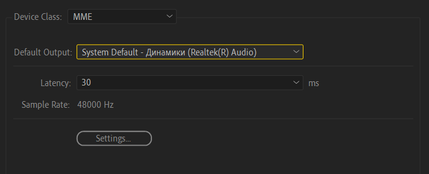
Настройки аудио-выхода
Если это не помогло, проверьте включен ли звук у слоёв на таймлайне и в окне
Preview.
Как передать проект другому человеку со всеми исходниками?
В
After Effects
есть замечательная функция Collect Files, позволяющая
сохранить .aep файл вместе с всеми исходниками в одну
папку, из которого можно создать архив с помощью
WinRAR
для Windows,
keka
для macOS или открыть общий доступ с помощью облачных хранилищ.
Для этого нужно перейти в
File > Dependencies > Collect Files и после
указать место для сохранения.
Открытие Collect Files
Если вы не сохраняли проект, программа предложит вам его сохранить. В
открывшемся окне появятся настройки: что собирать из исходников, убирать ли
неиспользуемые исходники и так далее.
Окно Collect File
Прежде чем сохранять, не забудьте выставить
For All Comps в пункте
Collect Source Files.
Предпросмотр идёт как будто в slow motion, что делать?
Для начала проверьте настройки вашего окна Preview и
убедитесь, что параметр FPS установлен на Auto. Также убедитесь, что в этом окне
активированы опции Cache before playback и
If caching, play caching frames. Это позволит
воспроизводить предпросмотр из кэша, минуя рендер в реальном времени, и
сохранять данные на диск или оперативную память, в зависимости от текущего
состояния кэша.
Окно Preview для демонстрации настроек для предпросмотра
Если у вас имеется достаточный объем оперативной памяти или возникают проблемы с
записью кэша на диск, вы можете выключить опцию кэширования в
Edit > Preferences > Media & Disk Cache.
Пункт Disk Cache отвечает за кэширование вашего проекта на диск
Иногда возникают ситуации, когда при использовании беспроводных наушников,
например AirPods или неправильного аудио выхода
After Effects пытается синхронизировать изображение и
звук, но получается всё через одно место. В таких случаях рекомендуется либо
обновить аудио драйверы, либо изменить аудио выход на другой и уменьшить
задержку (Latency) в
Edit > Preferences > Audio Hardware.
Настройка уменьшения задержки звука. По умолчанию установлено значение 200
Вывод такой: если вы пытаетесь воспроизвести предпросмотр композиции,
предварительно его не кэшируя, то ваш ПК попытается просчитать каждый кадр на
лету. Иногда это удаётся и без тормозов, если проект несложный, но чаще всего
при сложных сценах After Effects просто не успевает просчитать кадр до тех пор,
пока он не появится на экране. В окне Info вы всегда
можете посмотреть информацию о текущем FPS вашего предпросмотра.
Окно информации о предпросмотре не в реальном времени
Если предпросмотр будет воспроизводиться не в реальном времени - в окне будет
информация о NOT Realtime с текущим фреймрейтом.
Как удалить выражения из нескольких слоёв в композиции?
Для этого выделите все ваши параметры с выражениями. Удобнее всего это сделать с
помощью нажатия два раза по E, а затем выделить все
свойства с зажатым шифтом. После выделения - просто нажмите на "часы" с зажатой
клавишей Alt.
Удаление выражений из нескольких слоёв
Если я изначально не сохранил проект перед началом работы, а After Effects
вылетел, то проект можно восстановить?
Нет, нельзя. В следующий раз возьмите за привычку прожимать
Ctrl + S во время работы. Если вы создали новый проект,
но не сохраняли его ни разу - то ни auto-save, ни сама программа вам ничем не
поможет. Это проблема вашей халатности перед началом работы.
Как установить свой процент масштабирования предпросмотра?
Стандартными средствами After Effects не получится сделать, для этого существует
стороннее расширение
ae-zoom, которое вы можете загрузить из Github.
Демонстрация работы ae-zoom
Данное расширение создает простой пользовательский интерфейс, который позволяет
вам изменять уровень масштабирования на любое желаемое значение без жалкой
стандартной степени градаций масштаба, как 25%, 33.3%,
50%, 100% и так далее.
Чтобы установить расширение, нужно переместить
Zoom.jsx из архива в стандартную папку для скриптов:
На Windows нужно распаковать в папку
C:\Program Files\Adobe\Adobe After Effects 20XX\Support
Files\Scripts\.
На macOS нужно распаковать в папку
~/Library/Applications/Adobe After Effects 20XX/Scripts/.
Затем нужно переместить плагин:
Если вы пользователь Windows, то переместите
Zoom.aex из
Plug-in/Windows
в архиве в общую папку для плагинов
C:\Program Files\Adobe\Common\Plug-ins\7.0\MediaCore.
Если вы пользователь macOS, то переместите
Zoom.plugin из
Plug-in/macOS
в архиве в общую папку для плагинов
/Library/Application Support/Adobe/Common/Plug-ins/7.0/MediaCore.
Где найти Front View, Current Camera и прочие параметры вида камеры?
Чтобы найти эти кнопки, нужно создать камеру или перевести любой слой в режим
3D. После этого в окне предпросмотра вашей композиции вы с лёгкостью найдете эти
кнопки.
Режимы отображения камеры в 3D-пространстве
Если у вас в композиции нет камеры или 3D-слоя, то такие пункты не будут
отображаться. Потому что в этом нет никакого смысла.
Почему предпросмотр проигрывается в ужасном качестве?
Убедитесь, что в окне Preview установлено значение не
Auto или другое значение, отличное от
Full.
Установка разрешения предпросмотра в окне Preview
Также проверьте разрешение предпросмотра именно в окне, где отображается вид
вашей композиции.
Установка разрешения предпросмотра в окне вида композиции
Часто бывают случаи, когда пользователь сам устанавливает низкое разрешение
композиции, например 128 x 128, а потом удивляется пикселям, когда
пытается увеличить предпросмотр на более чем 100%.
Ещё есть отдельная категория лиц, которая считает, что раз пользователь
импортировал векторный файл или создал слой-фигуру, то предпросмотр в
After Effects будет всегда "векторным" даже если он
увеличит до 800%, а то и 1600%. Но пользователь не
учитывает тот факт, что увеличение предпросмотра - не то же самое, что
увеличение слоя. Композиция, разрешение которого задано пользователем, состоит
из пикселей, и никак не может быть "векторным". Программа не растеризует каждый
раз предпросмотр в зависимости от того, на сколько пользователь увеличил его и
это никак не настроить.
After Effects при рендере всегда растрирует слои в соответствии с заданным
разрешением композиции, поэтому при увеличении предпросмотра пользователь всегда
видит пиксели.
Если вы импортировали векторный файл, например
.ai, и при увеличении размера слоя вы видите пиксели,
то вам нужно включить Continuously Rasterize для слоя на
таймлайне. Этот пункт позволить уменьшить пикселизацию, растрируя векторный слой
до нужного разрешения при любых взаимодействиях с ним.
При включенной опции Continuously Rasterize могут быть
побочные явления, например разрывы слоя при использовании инструмента
Puppet Tool.
Установка Continuously Rasterize, в простонародье ”звёздочка" или "солнышко"
Как убрать пикселизацию при перемещении временной метки на таймлайне?
По умолчанию в After Effects включена функция
адаптивного разрешения. Для решения этой проблемы, просто отключите его в окне
предпросмотра композиции.
Отключение адаптивного разрешения при передвижении метки воспроизведения
После отключения этой опции при перемещении метки воспроизведения ваш
предпросмотр не должен ухудшаться в качестве.
Как отключить автоматическое кэширование предпросмотра во время бездействия
пользователя?
Кэширование во время простоя - функция, которая была добавлена в версии 2022 и
выше, но оно порой только мешает и нагружает ваш компьютер, заполняя всю
оперативную память. Эта функция напрягает, когда вы используете много сторонних
плагинов или делаете длинные композиции. С ним работа в
After Effects порой доходит до абсурда вплоть до его
частых вылетов.
Чтобы отключить автоматическое кэширование, перейдите в
Composition > Preview и уберите галочку с пункта
Cache Frames When Idle или прожмите комбинацию клавиш
Alt + Shift + I.
Настройка включения кэширования при простое
Если вы не хотите отключать эту функцию, но хотите изменить время, после
которого начнётся кэширование, то перейдите в
Edit > Preferences > Previews. В открывшемся окне
найдите пункт
Idle Delay Before Caching Starts: X seconds, где вместо
X вы можете указать нужное вам число от 2 до
15. Также в этом пункте вы можете настроить направление и область
автоматического кэширования.
Почему я не могу поставить временную метку в самый конец композиции?
Метка воспроизведения показывает то, что находится впереди его пути. Вы можете
поставить вручную текущее время через таймкод на нужную секунду, только вы не
увидите в своём предпросмотре ровным счётом ничего.
Проблема последней секунды
After Effects выделяет кадр, который вы видите в предпросмотре небольшой
подсветкой по всей высоте вашего таймлайна.
Композиция на скриншоте имеет параметры длины композиции ровно две секунды с
фреймрейтом 25 к/с, последняя секунда для этой композиции это
1 секунда и 24 кадра или же 00:01:24. На 50-м кадре вы
ничего не увидите, так как отсчёт кадров идёт с нуля, а не с единицы, как у
индексов массива в языках программирования. Всего у вас действительно будет 50
кадров, но нумероваться они будут от 0 до 49.
Как применить Adjustment Layer только для нужных слоёв?
Изначально After Effects не поддерживает данную
функцию, но никто не запрещал использовать костыли с помощью масок.
Если у вас установлен VFX Suite от Red Giant, то вы
наверняка слышали об SuperComp. О нём и пойдет речь:
в нём вы можете сделать заливку для нужных слоёв, а затем из этой заливки
сделать маску для Adjustment Layer. Подробнее об этом
способе вы можете посмотреть в видео ниже от
@pavelusha.
Создание маски для Adjustment Layer с помощью Red Giant SuperComp
Если у вас этого плагина нет, то вы можете сделать подобные действия с помощью
Fill и прекомпозицией слоёв.
Почему при импорте исходника с переменным FPS в After Effects длина видео
отличается, чем в проигрывателе?
After Effects преобразует все кадры без пропусков на
временной шкале, потому что не понимает, с каким типом источника ему работать. В
результате чего длина видео оказывается меньше, чем хотелось бы. Для исправления
этой проблемы нужно интерпретировать исходник через
Interpret Footage > Conform to frame rate и выставить
нужный FPS, желательно совпадающий с FPS композиции в окне Project, либо
перекодировать видео через
Shutter Encoder
с постоянным FPS.
Окно Interpret Footage
Почему композиция с Element 3D выводится с периодическими мерцаниями?
Проверьте настройки вашей композиции. У композиции не должно быть дробной части
в FPS, только целая часть числа, например 24, 25 или
30, так как Element 3D не умеет
корректно работать в композиции с такими значениями кадров в секунду.
Как импортировать исходники, которые не поддерживает After Effects?
Изначально After Effects не поддерживает большое количество кодеков, такие как
VP9, VP8,
Flac, AV1. Также не
поддерживаются форматы .webm,
.flv,.mkv
и прочие.
Любая программа для монтажа и композитинга чего-угодно изначально предназначена
работать только с монтажным кодеком. В последнее время для упрощения работы
Adobe добавляет поддержку различных форматов. Но поскольку декодирование из
немонтажных кодеков работает не так, как хотелось бы, то могут возникать
различные проблемы, например появляются артефакты при использовании
H.264 из различных частей интернета.
Если у вас небольшой проект и нет желания заниматься перекодированием
исходников, то вы можете попробовать использовать плагин
Autokroma Influx. Он облегчает импорт некоторых файлов, которые не поддерживаются в
After Effects,
Media Encoder или
Premiere Pro.
Помните, что используя Autokroma Influx, вы рискуете
наткнуться на технические проблемы: искажённые цвета, долгий рендер или
различные ошибки.
Если это не решит проблему, вы можете перекодировать исходные файлы в монтажный
кодек с помощью
Shutter Encoder
в Apple Prores 422 и прочитать
правильный пайплайн
перед началом работы.
Как импортировать файлы .heic, .heif и .hevc?
На Windows 10 и 11 нельзя открыть файлы .heic,
.heif и .hevc без
установленных кодеков. Казалось бы, достаточно их установить с Microsoft Store,
но к сожалению, один из кодеков платный, поэтому мы будем устанавливать эти
пакеты вручную.
After Effects, к сожалению, нативно не поддерживает файлы формата
.hevc, а вот изображения формата
.heic - поддерживает.
Ошибка импорта HEIC в After Effects без установленных кодеков
Чтобы открыть эти файлы у себя на компьютере, а затем с ними работать
(перекодировать или отредактировать), нужно установить нужные кодеки. Кодек для
HEIF/HEIC и HEVC можно
скачать через
онлайн-генератор ссылок для Microsoft Store. Перейдите по этой ссылке и введите в строку поиска текст ниже и нажмите на
галочку для поиска.
https://apps.microsoft.com/9n4wgh0z6vhqДля установки кодека HEVChttps://apps.microsoft.com/9pmmsr1cgpwgДля установки кодека HEIF
После того как вставили одну из ссылок - скачайте файл формата
.appxbundle. Если ваш браузер жалуется на "вирусы" -
проигнорируйте это и продолжите скачивание.
Чтобы установить .appxbundle пакеты, достаточно их
открыть двойным кликом.
Если вам предлагают открыть файл с помощью
Обработчика команд Windows или
Установщика приложений, то выбирайте что вам душе
угодно. Я же предпочту Обработчика.
Окно "Каким образом вы хотите открыть файл?"
Если после установки с помощью Обработчика команд вы
видите это, то кодеки установились корректно.
Path :
Online : True
RestartNeeded : False
После установки кодеков вы теперь сможете открывать файлы
.heif, .heic и
.hevc на вашем компьютере с помощью просмотрщиков фото
или видео, например FastStone Image Viewer или
MPC-HC, а видеофайлы для работы в
After Effects всегда можно переконвертировать через
Shutter Encoder
в монтажный кодек.
Как избавиться от ступенчатого градиента?
Для начала немного теории о том, почему градиент становится негладким: при
использовании неконтрастных градиентов возникает неприятный эффект под названием
Color Banding.
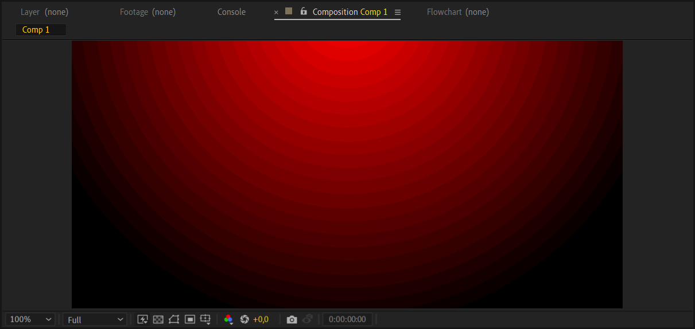
Пример Color Banding
Это происходит из-за недостаточной цветовой глубины, так как 8-битное
представление не может отобразить все промежуточные оттенки цветов,
присутствующие в градиенте. Также это может быть из-за использования
видеокодеков, которые слишком сжимают цвета, например
H.264.
Ниже прикреплено видео с подробным объяснением о том, почему видео с низкой
яркостью и недостаточной контрастностью ухудшают качество вашего видео:
В большинстве случаев эта проблема решается повышением битности в проекте. Для
этого откройте Project Settings при помощи комбинации
клавиш Ctrl + Alt + Shift + K и перейдите во вкладку
Color. Найдите пункт Bit Depth и
установите 16 или 32 бита.
Окно Project Settings с открытой вкладкой Color
Учтите, что при повышении глубины цвета ресурсы вашего ПК будут использоваться
больше и возрастает риск нарваться на злейшего врага под названием
Out of Memory
Уменьшить эффект бандинга может помочь и обычный шум.
Для этого создайте Adjustment Layer поверх всех слоёв и
примените эффект Noise со значением от 1 до 5 процентов.
Почему при импорте файла Illustrator с градиентами в After Effects они не
переносятся корректно?
Принцип работы градиентов у двух программ отличаются, поэтому
After Effects не может корректно перенести градиенты из
Illustrator. Для этого придётся воссоздать градиент
вручную разными способами или использовать сторонний плагин
Overlord.
Почему у меня отличается вид графика скорости, если пытаюсь повторить что-то по
туториалу?
У вас и автора какого-то видео установлены разные виды графика скорости. Для
этого переключите вид на нужный вам с помощью правой кнопки мыши по графику или
второй кнопки снизу в открытом Graph Editor.
Изменение вида графика скоростиПочему я не могу изменить график скорости с помощью "усиков"?
Вы пытаетесь редактировать график в параметре, у которого в массиве больше
одного значения, например - Position. В таком случае в виде Value Graph нельзя
изменять значения, если не делить положение на несколько осей с помощью
Separate Dimension.
Функция разделения осей у свойства слоя
Если вам такой вариант не нравится, то измените вид графика на
Speed Graph, как указано в предыдущем пункте.
Как вернуть нужные колонки на таймлайне?
Для этого нажмите правую кнопку мыши над столбцами с уже существующими
параметрами и выберите то, что вам нужно.
Добавление колонок
Что делать, если у двух ключей одинаковое значение, а между ними всё равно
происходит движение?
В моем примере у первого и второго ключа одинаковое значение 100%,
но между ними всё равно идёт анимация из-за изменённого графика скорости. График
может измениться автоматически, даже тогда, когда вы этого не хотите.
Проблемная интерполяция
Чтобы избежать этого, вам нужно изменить режим интерполяции скорости. Для этого
выделите все ключи, которые вам нужны и нажмите на ПКМ,
а затем выберите Keyframe Interpolation.
Открытие окна Keyframe Interpolation
Затем в новом окне выберите Linear или на
Hold в пункте
Temporal Interpolation.
Выбор интерполяции
После этого у вас между двумя ключами не будет лишней анимации.
Почему эффект упирается в границы слоя?
Это случается из-за того, что нужный эффект может работать только в пределах
размера вашего слоя, а не размера вашей композиции. То есть если у вас
композиция размером 1920 на 1080, а слой с разрешением
640 на 480, то эффект будет работать только в пределах второго
разрешения. Часто это происходит при применении эффекта на пре-композицию
меньшего размера, чем основная.
Проблема ограниченной области
Поэтому для устранения такого неприятного эффекта существует
Grow Bounds. Примените этот эффект на слой и
поставьте по иерархии первым и укажите нужное "фиктивное" расширение для слоя,
чтобы уменьшить такой неприятный эффект.
Иногда стандартный Grow Bounds в некоторых ситуациях
может криво работать или не помогает вовсе. Поэтому на помощь приходит
Grow Bounds от Red Giant, находящийся в пакете
Trapcode Suite. Инструкция по его использованию не
нужна, он работает аналогично как и встроенный эффект в
After Effects.
Как сделать в Saber прозрачный фон?
Для этого в настройках Saber откройте пункт
Render Settings и укажите в
Composite Settings параметр
Transparent.
Как расширить края у Saber, если Grow Bounds не помогает?
Не нужно применять эффект на слой, который перемещается и не соответствует
размеру композиции. Для этого создайте новый
Solid Layer, примените
Saber и укажите в
Customize Core > Core Type тип
Layer Masks. Затем перенесите Path фигуры или маски на
новый Solid с помощью Ctrl + С и
Ctrl + V. Или же создайте любую маску на
Solid Layer и привяжите с помощью лассо параметр
Mask Path у слоя с Saber к
Path слоя из которого вы собираетесь взять контур.
Привязка пути маски к пути исходного файла
Почему у меня функция Alpha/Luma Matte отличается от того, что есть в
туториалах?
Вы смотрите видео, в котором используется старая версия программы. В более новых
версиях After Effects разработчики обновили логику
использования масок по альфа-каналу и яркости в
Adobe After Effects 2023 и выше. Дополнительную
информацию об изменениях вы можете найти на
сайте Adobe.
За время, прошедшее от выпуска этой функций, ютуберы наверняка наплодили кучу
новых видео с использованием обновленной логики масок.
Как отключить автоматическое открытие панели "Свойства"?
Данная функция была добавлена в After Effects 23.4 и
выше. Чтобы её отключить, выберите в панели инструментов любой инструмент,
например Текст и нажмите рядом с ним
Auto-Open Panel. Возможно, эту же процедуру надо
повторить с инструментом Кисть.
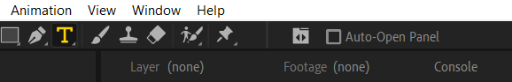
Опция "Auto-Open Panel" при выбранном инструменте "Текст"
Почему при использовании 3D-слоёв я не могу изменить параметры наложения?
Вы используете рендер Advanced 3D или
Cinema 4D, для них не предусмотрена поддержка этой
функции.
Для того чтобы решить эту проблему, переключитесь на
Classic 3D или используйте эффекты для композитинга.
Почему я не могу выделить объект при использовании Rotobrush в After Effects
2019?
Данный баг встречается в сборке After Effects 2019 от
KpoJluk. Проблема решается откатом программы до версии
After Effects CC 2018, обновлением до более свежих
версий или установкой аналогичной версии от m0nkrus.
У меня порой к пользователям старых версий
After Effects вопрос: зачем вы упорно продолжаете
использовать старые версии программ, когда в новых версиях разработчики
исправляют ошибки? К пользователям Windows 7 или
Windows 8.1 вопросов нет.
Как продублировать композицию так, чтобы две композиции были независимы друг от
друга?
Чтобы сделать две композиции независимыми, их не нужно копировать на таймлайне с
помощью Ctrl + D. Это происходит потому что вы
копируете ссылку на одну и ту же композицию, а не
создаёте новую.
Если у вас внутри композиции нет подкомпозиций, то вы можете продублировать
композицию с помощью окна Project.
Если у вас внутри композиции находятся подкомпозиции и их нужно тоже сделать
независимыми, то для быстрого решения этой проблемы вы можете воспользоваться
бесплатным сторонним скриптом
True Comp Duplicator.
Чем отличается Mocha AE от Mocha Pro?
Mocha AE - встроенная версия
Mocha в стандартный пакет
After Effects и имеет ограниченный функционал.
Например, со стандартным Mocha AE
вы не можете сделать стабилизацию камеры, удалить объекты, использовать
магнитное лассо и прочее.
Mocha Pro же лишена этих ограничений, а также плагин с
платной версией можно засунуть в Premiere Pro и другие
программы.
Подробнее о различиях между версиями вы можете прочитать на
сайте BorisFX.
Как называется всплывающая панель, с помощью которого можно быстро применить
эффект с помощью Ctrl+Space?
В стандартном исполнении After Effects при нажатии на
эту комбинацию клавиш ничего не произойдёт. Для этого нужно установить сторонний
плагин
FX Console
от VideoCopilot.
Применение эффектов с помощью FX Console
После установки вы можете быстро применить нужный эффект или пресет, вызвав меню
с помощью Ctrl + Space.
Как сохранить текущий кадр в отдельный файл?
Для сохранения текущего кадра, вы можете нажать на комбинацию клавиш
Ctrl + Alt + S или перейдите в
Composition > Save Frame As > File.
Пункт "Сохранить кадр как..."
У вас откроется Render Queue, если вы указали путь для
сохранения, в котором вы можете выбрать нужный формат. По умолчанию
After Effects сохраняет в формате Photoshop, но вы
всегда можете изменить настройки по умолчанию через редактор шаблонов для
рендера в Output Module > Make Template.
Выбор шаблона по умолчанию для вывода кадра
Если вам этот способ неудобен, вы можете сохранить текущий кадр через сторонний
плагин
FX Console. При открытии панели эффектов через Ctrl + Space вы
можете нажать на иконку фотоаппарата для сохранения текущего кадра.
Прежде чем использовать эту функцию, перейдите в настройки
FX Console и установите галку напротив пункта
Full Resolution Screenshots. Это позволит сохранять
скриншоты в полном разрешении, независимо от того, какое было установлено в окне
предпросмотра.
Окно FX Console
После нажатия на неё, вам предложат выбрать путь для сохранения и формат
изображения.
Что делать, если слой улетел за пределы композиции при перемещении из одного
места в другое?
Для возвращения вашего слоя на таймлайне после или перед временной меткой в
After Effects, используйте клавиши [ или
].
Почему у меня первый кадр в композиции начинается не с нулевой секунды?
Такое может произойти, если вы при создании прекомпоза нажали на пункт
Adjust composition duration to the time span of the selected layers.
Для исправления времени начала, вам следует зайти в настройки композиции через
Ctrl + K и указать нужное число в графе
Start Timecode. В нашем случае - это
0.
Установка начальной секунды в настройках композиции
Как отключить начальный экран со списком последних открытых проектов при
запуске?
В связи с тем, что на нелегальных версиях
After Effects данное окно зачастую работает через одно
место или оно порой слишком бесит при запуске, то разработчики из Adobe
предусмотрели функцию его отключения. Для этого вам нужно перейти в
Edit > Preferences > Startup & Repair и убрать
галочку с пункта Enable Home Screen.
Отключение домашнего экрана при запуске
Что такое "секретное меню" в After Effects и для чего оно нужно?
Разработчики из Adobe действительно скрыли некоторые функции от любопытных глаз
и поместила их в отдельную категорию Secret. Но там
ничего интересного нет. Прям совсем.
Для того чтобы его открыть, нужно открыть любой пункт настроек в
Edit > Preferences с зажатой клавишей
Shift.
Учтите, что клавиша Shift должна быть зажата до тех
пор, пока окно с настройками не откроется. После открытия вы можете заметить и
открыть в списке настроек пункт Secret.
Псевдо-секретные настройки
В данном меню находятся два пункта:
Disable Layer Cache и
Ignore Sequence Rendering Errors. Первая настройка
позволяет отключить кэш слоя и автоматически очищать каждый X кадр при рендере
предпросмотра. Второй пункт позволяет программе забить болт на ошибки при
рендере последовательности изображений.
Изменение этих параметров может серьёзно сказаться на стабильности программы.
Выполняйте действия на свой страх и риск!
Данные настройки могут вам помочь, если вы испытываете проблемы с переполнением
оперативной памяти при рендере.
Как изменить цвет интерфейса в After Effects?
Для этого перейдите в консоль с помощью комбинации
Ctrl + F12, затем прожмите три полоски рядом с
заголовком Console и выберите Debug Database View.
Окно консоли и выбор Debug Database View
Затем найдите пункт Enable_Theme_Colorizing и
установите галку рядом с ним.
Пункт Enable_Theme_Colorizing
В After Effects 2025 и выше этот пункт может отсутствовать. Для его активации
переключитесь в
Console View и введите команду ниже и нажмите на
Enter.
debug.set Enable_Theme_Colorizing=true
После включения этой опции перейдите в
Edit > Preferences > Appearance и нажмите на
кнопку Change Color. В открытой цветовой палитре вы
можете установить любой цвет какой захотите.
Выбор акцентного цвета для интерфейса
Затем нажмите OK и теперь вы можете наслаждаться
афтером не как у всех.
Почему After Effects меняет шрифт на другой, если пишу на кириллице?
Шрифт не обладает поддержкой кириллицы, ищите версию шрифта с поддержкой
кириллицы.
Частые ошибки
After Effects часто предлагает решение ошибки, которую он выдаёт. Пожалуйста, не
ленитесь переводить вашу ошибку через переводчик или искать ответ в интернете!
Часто появляется ошибка 23::40 или окно “Out of Memory”, "After Effects has
unexpectedly run out of memory and cannot complete this export" или “Low memory
warning. RAM use has been extended for previews”
В данном случае виден налицо факт переполнения оперативной памяти, вызванный
неоптимизированностью проекта или неправильными настройками проекта и программы.
Убедитесь что вы не используете исходники с большим разрешением, не используете
больше 8 бит цвета в проекте и не перегружаете себя множеством эффектов.
Ошибка рендера из-за малого количества ОЗУ
Для решения этой проблемы могу дать вам несколько советов: очищайте кэш с
помощью Edit > Purge > All Cache, перекодируйте
исходники в монтажный кодек, установите программу
Mem Reduct
для автоматической очистки оперативной памяти при её заполнении или по времени и
активируйте файл подкачки в настройках ПК (если вы используете Windows):
Параметры > О системе > Дополнительные параметры системы >
Быстродействие > Виртуальная памятьи укажите параметры, как на видео ниже.
Установка файла подкачки на Windows 11
Бывает такое, что некоторые неуверенные пользователи After Effects могут
выделить неправильное количество оперативной памяти в
Edit > Preferences > Memory & Performance,
неправильно прочитав настройку.
Проблема заключается в том, что пользователь зачем-то выделяет максимально
возможное количество ОЗУ не самой программе, а другим
используемым программам в фоне, думая что он выделяет всю память для
After Effects. На скриншоте показана типичная ошибка
новичка, который выделил 14.4 ГБ ОЗУ остальным программам, а для
After Effects оставил всего лишь
1 ГБ ОЗУ и впоследствии натыкается на ошибки про нехватку
оперативной памяти.
Неправильное выделение оперативной памяти. В таком случае для After
Effects останется выделено всего лишь 1 ГБ ОЗУ
Для правильного выделения памяти - зажмите число и потяните его максимально
влево или укажите 0, нажав на число выделяемой
оперативной памяти для других программ, и нажмите
Enter.
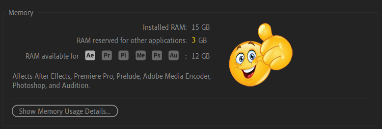
Правильное выделение оперативной памяти. В данном случае, ниже 3 ГБ ОЗУ
установить не получится
Вы также можете заранее просчитать тяжелые участки в вашем видео, сделав прокси
для композиций. Я не шучу, это может вам помочь, уменьшив временные затраты на
перепросчёт кадров. Для этого перейдите в окно Project,
выберите проблемную композицию и нажмите ПКМ по нему. Затем перейдите в
Create Proxy > Movie. После нажатия вас отправят в
очередь рендера.
Создание прокси для композиции
Откройте пункт Render Settings и выберите
Best Settings или перейдите в раздел
Custom и поставьте все наивысшие настройки, чтобы после
создания прокси ничего не пропало и не ухудшилось.
После успешного создания прокси-файла вы можете продолжить работу. Внесённые
изменения в композиции нужно будет опять перерендерить, если это необходимо.
Если вам не нравится эта функция, то вы можете отключить прокси у композиции,
нажав Set Proxy > None.
Отключение прокси у композиции
При финальном рендере, чтобы уменьшить время просчёта на сложных кадрах, укажите
использование уже созданных прокси-файлов для композиций в окне
Render Settings.
Использование прокси-файлов при рендереError: Cached preview needs 2 or more frames for playback
Первым делом очистите кэш предпросмотра. Для этого перейдите в
Edit > Purge и нажмите на
All Memory and Disk Cache.
Если это не помогло, тогда убедитесь в том, что ваша рабочая область
действительно выделена не менее чем на два кадра.
Проблеме ещё могут мешать нагруженные эффекты, которые ваш ПК с трудом
переваривает. Особенно актуально, если вы применили множество эффектов разных
разработчиков, которые могут конфликтовать друг с другом.
Unable to allocate enough memory to render the current frame (XXXX x XXXX @ X
bpc). Either decrease the memory requirements for the rendering frame, or
install more RAM
Данная ошибка часто появляется при использовании огромных по разрешению
исходников, нагруженных эффектов или высокой битности в проекте (16
или 32 бита вместо 8). В ошибке буквально есть решение
проблемы: нужно уменьшать требования программы к оперативной памяти путём
оптимизации вашего проекта.
Обычно помогают советы, написанные из предыдущих пунктов, но если у вас
действительно мало ОЗУ, то вряд ли что-то можно сделать, если вы не хотите
переделывать весь проект. Либо вам всё же придётся раскошелиться и купить больше
оперативной памяти. На данный момент минимально-комфортное количество
оперативной памяти для работы в After Effects - это
32 Гб.
Effect cannot allocate a buffer larger than 30000 pixels in either dimension
Если вы применяете эффекты Motion Tile,
CC Repetile, переходы из
AtomX или Motion Bro,
или что-то похожее, то эта ошибка возникает из-за того что у вас либо слишком
большой исходник, либо вы слишком перекрутили значения так, что на каждую ось
для картинки вышло более 30000 пикселей, которые
After Effects не может обработать.
30000 пикселей у слоя на каждую ось - максимальное значение для
After Effects, это ограничение нельзя обойти.
В качестве решения необходимо уменьшить значения для используемых плагинов или
уменьшить разрешение исходников удобным для вас способом.
This effect may slow down Preview and Export as it is optimized Multi-Frame
Render
Данное предупреждение указывает на то, что вы используете старую версию плагина,
в котором ещё не реализована
функция многокадрового рендера. Это окно можно
проигнорировать или решить проблему путём обновления плагинов до более свежих
версий.
Если эта ошибка вас раздражает или у вас нет возможности обновить плагин, то
можно отключить предупреждение, отключив
функцию многокадрового рендера в настройках
After Effects.
Данная опция находится в Edit > Preferences > Memory & Performance
Отключение этой настройки также может помочь в нагруженных проектах, если вы
имеете проблемы с производительностью, ошибками рендеринга или переполнения ОЗУ.
Вертикальные тонкие полосы в композициях при использовании видео-исходников
Если вы используете видеокарту Nvidia, то попробуйте
установить драйвера из линейки Studio. Это баг
некоторых версий драйверов из линейки Game Ready. В
противном случае - перекодируйте видео в монтажный кодек или переключите рендер
на только на процессоре.
"Не удалось выполнить преобразование символов Unicode" или "Не удалось загрузить
псевдоэффекты"
Данная ошибка вылезает из-за косяков локализации со стороны разработчиков Adobe.
Просто установите английский язык в программе или откатите версию до предыдущей.
В некоторых случаях помогает
сброс настроек After Effects
до стандартных или создание новой учётной записи пользователя на самом ПК.
Красный или синий экран при использовании Twixtor или BorisFX Sapphire
Если вы сталкиваетесь с красным цветом при применении плагинов из
BorisFX Sapphire, то достаточно вам их
переустановить или установить более старую версию из
склада стройматериалов.
В случае с Twixtor красный цвет появляется, если
эффект по очередности стоит не первым. Расположите его на первое место и
проблема уйдет. Если при использовании Twixtor вы
сталкиваетесь с синим цветом, то это означает то, что длина исходника из-за
изменения скорости стала короче, чем длина слоя.
This project must be converted from version XX.X.X (Windows/macOS). The original
file will be unchanged
Данное сообщение показывает, что ваш проект будет переконвертирован для новой
версии After Effects, так как вы открыли проект из
старой версии. Оригинальный файл останется без изменений, а конвертированный
проект придётся сохранить.
The file you are attempting to open was created with After Effects version
XX.X.X (Windows/macOS) and cannot be opened with this version
Вы не можете открыть проект, созданный в более новой версии
After Effects. Попросите автора или пользователей
старых версий пересохранить файл с помощью
File > Save As > Save Copy As XX.X или
действительно обновите After Effects до последней версии.
After Effects error: Disk Cache folder doesn't exist (or isn't a directory), so
it will be reset to the system temporary directory. Please check your settings
in Media and Disk Cache Preferences
Такое часто происходит, если вы импортируете настройки программы со старого
компьютера на новый. Данное предупреждение показывает, что папка, куда был
установлен путь для кэша, не существует и дисковый кэш будет генерироваться в
%TEMP%.
Изменить путь для кэша вы всегда можете в
Edit > Preferences > Media & Disk Cache,
включив пункт Enable Disk Cache и указав путь с помощью
Choose Folder.
"Cinema 4D must be installed in order to use the Cinema 4D renderer" или
"Cineware Server Suite failed to acquire renderer port and path"
Данное предупреждение показывает, что вы не можете пользоваться рендером
Cinema 4D из After Effects,
потому что у вас не установлена его "большая версия".
Для решения проблемы достаточно установить полноценную
Maxon Cinema 4D. Обычно в ошибке указывается, какая
нужна минимальная версия для запуска рендер-движка:
Для After Effects 24.1 и выше требуется установить
Cinema 4D 2024.x.x.
Для After Effects 23.1-24.0 требуется установить
Cinema 4D 2023.x.x.
Для After Effects старше 23.0 требуется установить
Cinema 4D R25.117, R26.xxx не подходит.
Если ошибка остаётся даже после установки, убедитесь в том, что
After Effects и
Cinema 4D расположены на стандартном разделе
C:\!
Frame rate mismatch, or footage with fields found. For best Roto Brush &
Refine Edge results, set the composition to XX fps to match the layer source
Данное предупреждение показывает, что вы пытаетесь сделать ротоскоп исходника,
фреймрейт которого не совпадает с фреймрейтом композиции. Программа прямым
текстом говорит, что нужно установить FPS из текста о предупреждении для
композиции через Ctrl + K.
Никто не запрещает пользоваться функцией
Rotobrush прямо на прекомпозиции, если вы не хотите
менять FPS основной композиции. Также никто не запрещает интерпретировать футаж
в один FPS через
Interpret Footage > Conform to frame rate в окне
Project.
Если ни один способ вам не подошёл - перекодируйте видео через любой конвертер,
например
Shutter Encoder, с нужным FPS и замените его в проекте с помощью
Replace Footage > File в окне проекта.
Content Aware Fill Error: Initialization Failed
Данная ошибка может вылезти по совершенно различным причинам. Одна из них - это
кириллица в пути к .aep файлу, в названии самого файла
и в названии композиции. Решение простое: постарайтесь избавиться от кириллицы в
названиях, а также перенести используемые файлы из внешнего диска на ваш ПК,
если они там расположены. После этого попробуйте воспользоваться
Content Aware Fill снова.
Также ошибка может возникнуть из-за рабочего цветового пространства. Для этого
проверьте ваше пространство во вкладке Color в
Project Manager, которое открывается с помощью
комбинации клавиш Ctrl + Shift + Alt + K. Затем в
пункте Working Color Space попробуйте убрать цветовой
профиль или изменить на другой.
System Compatibility Report при запуске After Effects
Паниковать не надо! Для продолжения запуска, нажмите на кнопку
Continue with known issues. В таком случае запуск
программы продолжится, но возможно будут отключены некоторые функции в
зависимости от проблем совместимости.
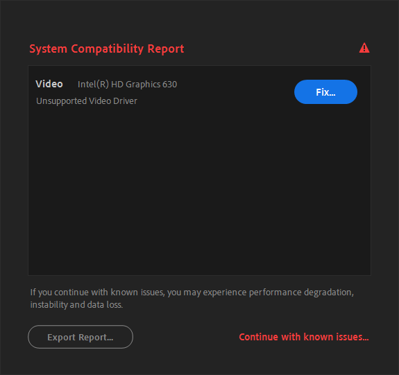
Ошибка совместимости из-за устаревших драйверов на встроенную видеокарту на
процессор Intel Core i7-7700
Для отключения этого предупреждения вы можете зайти в
Edit > Preferences > Startup > Show System Compatibility
Issues. В старых версиях After Effects эта настройка находится в разделе
General.
В противном случае - обновите драйвера или устраните проблемы, о которых вам
пишут в этом окне.
Advanced 3D is not supported by the current software
Часто это происходит из-за отсутствия нужных драйверов на вашу видеокарту или
из-за несоответствия вашего ПК с системными требованиями After Effects.
Ошибка при запуске приложения 0xc0000142
Ваш устаревший компьютер уже не поддерживает современные версии программы. Для
свежих версий требуется процессор от Intel минимум 8-го поколения (по факту
можно запустить от 4-го поколения) или AMD Ryzen минимум 1000 серии, а также
поддержка инструкций AVX2. Подробнее о системных требованиях вы можете прочитать
на
сайте Adobe.
Ошибка 0xc0000142
Для решения этой проблемы, установите
After Effects 2023 или старее из
склада стройматериалов.
В некоторых случаях у пользователей внезапно
AVX2 отключается системой, даже если процессор
поддерживает эти инструкции. Чтобы их включить, откройте терминал и введите
команду ниже.
bcdedit /set xsavedisable 0
Затем перезагрузите компьютер и попробуйте открыть
After Effects. Чтобы отключить
AVX2, укажите вместо 0 число
1 и также перезагрузите ПК.
Ошибка про отсутствие MSVCP140.dll, api-ms-win-crt-runtime-l1-1-0.dll и
аналогичные
Похоже, у вас не установлен
Microsoft Visual C++ Redistributable, который можно установить перед установкой программ от Adobe или не
установлены все доступные обновления для Windows.
Точка входа в процедуру не найдена в библиотеке Kernel32.dll
Вы зачем-то пытаетесь установить After Effects 2020 и
новее на неподдерживаемую операционную систему, например
Windows 7 или Windows 8.1.
Adobe давно прекратила поддержку этих операционных систем, ваше решение -
установите After Effects 2019
или старше.
Не найден файл D3DCompiler_47.dll
Для решения этой проблемы распакуйте
D3DCompiler_47.dll
в директорию с программой, а затем попробуйте снова открыть её. Если это не
помогло - обновите Windows до последней версии.
Браузеры могут ложно сработать на архив, пометив их как вирус. Для решения этой
проблемы просто продолжите скачивание или переименуйте скачанный файл в
.zip
After Effects warning: A rendering plug-in was not found. The default rendering
plug-in will be substituted. “Ray-Traced 3D”
Вы не можете открыть очень старые проекты с использованием устаревшего движка
Ray-Traced 3D в новых версиях
After Effects от 2020. Для этого придётся устанавливать
After Effects CS6 или 2019, где эта функция доживала
последние дни, и открывать проект там.
Warning: This project uses fonts that are not currently available on this
computer. Font substitution will occur until the originals become available
Ниже предупреждения прилагается список отсутствующих шрифтов, которые не
установлены на вашем компьютере. Если автор шаблона или проекта забыл
предоставить шрифты, то их вам нужно будет найти и установить вручную.
Предупреждение о том, что шрифт не найден и будет заменён на стандартный
Если вы установили шрифт, но предупреждение никуда не пропало - замените шрифты
вручную, так как шрифт автора проекта и ваш шрифт, установленный где-то из
просторов интернета, возможно, имеют разные названия и они не могут соединиться
автоматически.
This project contains references to missing effects. Please install the
following effects to restore these references
При открытии проекта программа сообщает, что определённые плагины не найдены.
Такое часто бывает, если вы открыли чужой проект, а в нём содержатся эффекты из
плагинов которые у вас не установлены.
Ниже ошибки обычно прилагается список плагинов, которые отсутствуют на вашем
компьютере и их необходимо установить для корректного запуска проекта.
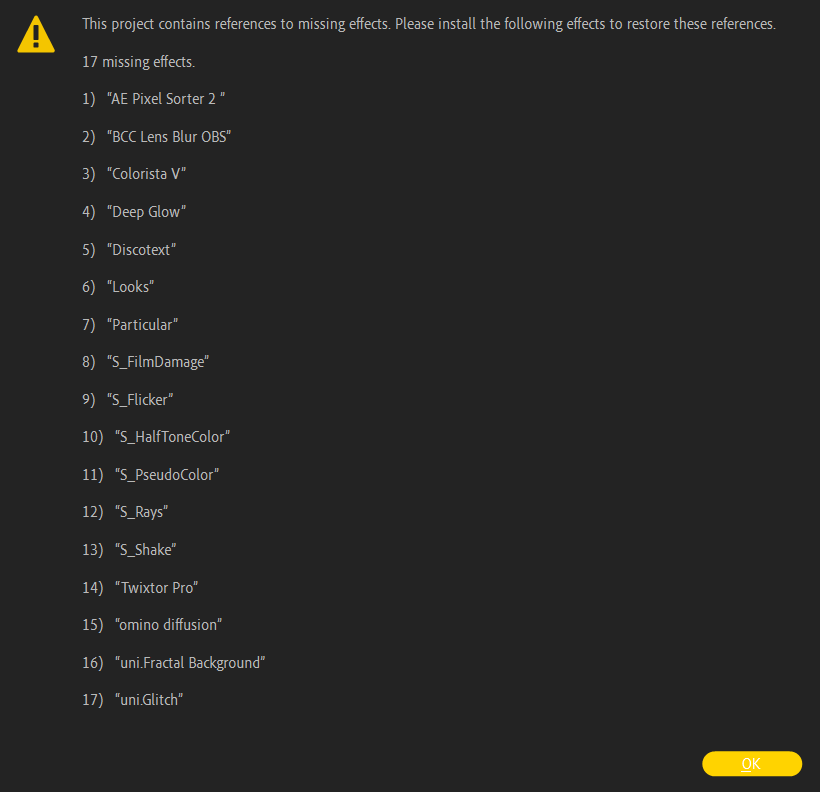
Предупреждение о том, что указанные плагины не установлены или некорректно
загружаются
Бывают такие случаи, что при открытии очень старых проектов теряются часть
плагинов, которые частично возможно или невозможно использовать в новых версиях
After Effects. Если у вас отображается ошибка о том, что невозможно найти
стандартный эффект "... Blur", то вам нужно применить стандартный скрипт
UpdateLegacyBlurs.jsx, находящийся в
File > Scripts.
Проблемы с установкой
Что делать, если файлы разбиты на .part1, .part2 и так далее?
Эти файлы были специально разделены для обхода ограничений Telegram по размеру
загружаемых файлов, все части нужно скачать на компьютер. Для корректной
распаковки многотомных архивов воспользуйтесь
WinRAR
для Windows или
keka
для macOS.
Если в архиве присутствует исполняемый файл .exe, то
достаточно его запустить и WinRAR автоматически
распакует все файлы.
В архив забыли положить инструкцию для установки, как что устанавливать?
В большинстве случаев процедура установки плагинов или шаблонов универсальна,
просто следуйте рекомендациям ниже:
Прежде чем использовать .aep и
.mogrt шаблоны или пакеты для
AtomX, Motion Bro и
подобных расширений, убедитесь, что они полностью распакованы и расположены в
пути не длиннее 256 символов!
Если в архиве находится файл .aep или
.mogrt, то такие файлы просто импортируются в ваш
проект с помощью File > Import или
Ctrl+I и никуда не устанавливаются.
Если в архиве находится файл .aex, то такие плагины
для Windows распаковываются в общую папку плагинов
C:\Program Files\Adobe\Common\Plug-ins\7.0\MediaCore.
Если в архиве находится файл .plugin, то такие
плагины для macOS распаковываются в общую папку плагинов
~/Library/Application Support/Adobe/Common/Plug-ins/7.0/MediaCore.
Если в архиве находится файл .jsx, то такие скрипты
распаковываются в стандартную папку скриптов:
Windows:
C:\Program Files\Adobe\Adobe After Effects 20XX\Support
Files\Scripts
macOS:
~/Library/Applications/Adobe After Effects 20XX/Scripts
Если в архиве находится .jsxbin файл, то такие
скрипты распаковываются в стандартную папку
Script UI Panels:
Windows:
C:\Program Files\Adobe\Adobe After Effects 20XX\Support
Files\Scripts\Script UI Panels
macOS:
~/Library/Applications/Adobe After Effects 20XX/Scripts/Script UI
Panels
Если в архиве находится файл .zxp, то такие файлы
устанавливаются через
ZXP Installer от aescripts. Если вы не хотите устанавливать стороннее ПО, то вы можете переименовать
.zxp в .zip и распаковать
содержимое в папки:
После распаковки примените
.reg
файл для Windows или выполните
скрипт из файла
для macOS. Если вы не можете запустить .sh скрипт с
помощью chmod -x на macOS, то введите команды ниже в
терминал:
defaults write com.adobe.CSXS.5 PlayerDebugMode 1 defaults write
com.adobe.CSXS.6 PlayerDebugMode 1 defaults write com.adobe.CSXS.7
PlayerDebugMode 1 defaults write com.adobe.CSXS.8 PlayerDebugMode 1 defaults
write com.adobe.CSXS.9 PlayerDebugMode 1 defaults write
com.adobe.CSXS.10 PlayerDebugMode 1 defaults write com.adobe.CSXS.11
PlayerDebugMode 1 defaults write com.adobe.CSXS.12 PlayerDebugMode 1 defaults
write com.adobe.CSXS.13 PlayerDebugMode 1 defaults write
com.adobe.CSXS.14 PlayerDebugMode 1 defaults write com.adobe.CSXS.15
PlayerDebugMode 1 defaults write com.adobe.CSXS.16 PlayerDebugMode 1 defaults
write com.adobe.CSXS.17 PlayerDebugMode 1 defaults write
com.adobe.CSXS.18 PlayerDebugMode 1 defaults write com.adobe.CSXS.19
PlayerDebugMode 1 defaults write com.adobe.CSXS.20 PlayerDebugMode 1 defaults
write com.adobe.CSXS.21 PlayerDebugMode 1 defaults write
com.adobe.CSXS.22 PlayerDebugMode 1 defaults write com.adobe.CSXS.23
PlayerDebugMode 1 defaults write com.adobe.CSXS.24 PlayerDebugMode 1 defaults
write com.adobe.CSXS.25 PlayerDebugMode 1
Если в архиве находится файл .ffx, то такие пресеты
обычно распаковываются в стандартную папку пресетов
Windows:
C:\Program Files\Adobe\Adobe After Effects 20XX\Support
Files\Presets
macOS:
~/Library/Applications/Adobe After Effects 20XX/Presets
В папке с пресетами вы можете создать свою собственную папку со своим именем
или расположить скачанные пресеты в уже существующие.
Если в архиве находится .atom, то такие файлы
устанавливаются путём drag'n'drop в окно расширения
AtomX.
Если в архиве находится .mbr, то такие файлы
устанавливаются путём drag'n'drop в окно расширения
Motion Bro.
Если в архиве находится файл .cube,
.itx, .look или
.lut, то такие файлы распаковываются в папку
Lumetri Color и затем используются с эффектом
Lumetri Color в вкладке
Creative.
Windows: переместите ваши файлы в
C:\Program Files\Adobe\Adobe After Effects 20XX\Support
Files\Lumetri\LUTs\Creative
macOS: перейдите в
~/Library/Applications/After Effects 20XX, затем
нажмите ПКМ по
Adobe After Effects 20XX и выберите
Показать содержимое пакета. После открытия
содержимого перейдите в
Contents/Lumetri/LUTs/Creative и переместите
ваши файлы.
Почему не подключаются исходники из шаблона?
Чаще всего проблема возникает из-за того, что пользователи не распаковывают файл
шаблона в отдельную директорию, а пытаются открыть
.aep файл напрямую из архиватора. Архиватор при
открытии .aep не распаковывает все файлы во временную
директорию %TEMP% и
After Effects не может определить где находятся
исходные файлы.
Для правильной работы шаблона рекомендуется полностью распаковать его в удобное
место, не превышающее 256 символов в пути.
Если вы распаковали шаблон вместе с исходниками, но файлы все равно не
подключаются автоматически, то вам нужно подключить их вручную. Просто щелкните
правой кнопкой мыши на любом потерянном файле в окне
Project, затем нажмите ПКМ по
исходнику с ошибкой и выберите
Replace Footage > File и укажите путь к потерянному
файлу. Вы можете найти потерянные файлы, введя в поиск
Missing Footage в окне
Project. Если все файлы проекта находятся в одной папке,
остальные файлы должны подтянуться автоматически.
Что за папка "_MACOSX"? Там лежат файлы для macOS?
Папка _MACOSX - это скрытая системная папка, которая
иногда может появляться при создании или распаковке файлов на компьютерах с
операционной системой macOS. Эта папка обычно содержит метаданные и информацию о
файловой системе, которая может быть полезна для macOS, но может быть ненужной
или даже мешающей пользователям других операционных систем.
Обычно там ничего интересного нет, поэтому эту папку можно проигнорировать.
Этот проект содержит ошибки выражений или This project contains an expression
error
Для решения этой проблемы смените язык After Effects на
английский создав пустой текстовый документ
ae_force_english.txt и поместите его в документы
вашего пользователя. Если вы по необъяснимым причинам не хотите менять язык, то
для этого есть стороннее расширение
Expression Universalizer, которая конвертирует выражения созданные на одной локализации для другой
локализации.
Это происходит из-за того, что проект был создан в другой локализации
After Effects, чаще всего на английском языке, и вы
пытаетесь открыть проект на другой локализации.
Если у вас программа на английском языке, а выражения до сих пор не работают:
попробуйте заменить движок выражений в Project Manager.
Для этого нажмите комбинацию клавиш
Ctrl + Shift + Alt + K, и в открышемся окне перейдите
на вкладку Expressions. Затем выберите альтернативный
движок и проверьте, не ушла ли ошибка.
Изменение движка выражений в After Effects
Что такое Adobe, OFX и Standalone в названиях установщиков плагинов?
Эти слова означают, для чего будет установлено приложение и как оно будет
работать.
Adobe, AE,
PR или PS: плагины для
программ от Adobe, часто поставляются отдельно для
After Effects,
Premiere Pro или Photoshop.
Бывают объединённые версии а-ля один раз установил - подключено во все
программы.
OFX или OpenFX: плагины
для программ с поддержкой OpenFX-плагинов. Такие плагины часто подходят для
популярных программ как Davinci Resolve,
Magix Vegas,
The Foundry Nuke, Natron
и другие.
Standalone: независимая ни от какой программы. На
примере Mocha, которая поставляется в трёх вариациях, вариант
Standalone не требует запуска из какой-либо
программы для монтажа и может работать отдельно от них.
Не удаётся найти helper.exe при установке репаков от Kpojluk
Эта ошибка возникает, когда Windows Defender или
сторонний антивирус блокирует файл helper.exe, который
является распаковщиком дистрибутива. Простейший способ решения - временное или
полное отключение антивируса во время установки. Если возникают проблемы,
добавьте %TEMP% вашей системы в белый список
антивируса на время.
Если способ из видео не помог, то рекомендую отключить Windows Defender с
помощью
Winaero Tweaker. После установки или распаковки портативной версии откройте программу,
подтвердите что вы осознаёте что делаете и найдите пункт
Disable Windows Defender. Установите галочку и
перезагрузите ПК. В некоторых случаях нужно отключить в Windows Defender пункт
Защита от подделки, которая не даёт отключить встроенный
антивирус полностью.
Отключение Windows Defender с помощью Winaero Tweaker
"Некоторые установочные файлы были повреждены" при попытке открыть репак от
Kpojluk
Данная ошибка появляется, если вы не докачали или прервали скачивание файла. В
таком случае просто повторите скачивание репака.
Если вы полностью скачали файл и уверены в том, что в
складе стройматериалов
битый файл - сообщите об этом в комментариях под нужным постом.
rsload.net заблокирован в hosts при открытии репака от Kpojluk
Такое бывает, если у вас нет файла hosts в системе или
сайт
rsload.net
внесён в этот список. Про исправление файла hosts расписано на сайте
remontka.pro.
Правда ли, что в репаках от Kpojluk водятся вирусы?
В репаках от KpoJluk антивирусы часто ругаются на файл
helper.exe и может помечаться как HackTool или иначе.
Этот файл распаковывает файлы дистрибутива, а также файлы для обхода проверки
лицензии. Антивирусы также ругаются на наличие галочки с рекламой перед
установкой и помечается как AdWare. При снятии галочки рекламы перед установкой,
ничего лишнего в систему не устанавливается. Virustotal также может срабатывать
ложно из-за малоизвестных антивирусов.
Ни в одной моей сборке никогда не было и не будет какого-либо вредоносного или
шпионского программного обеспечения. Реакция антивирусов может быть просто
ложной, а также обусловленной технической схожестью между методом активации
программы и активностью вредоносного ПО. Поэтому, либо вы доверяете мне, как
сотни тысяч других пользователей, и отключаете антивирус на время установки,
либо прекращаете использование этого ресурса.
Если вы испугались командной строки при установке программ от
Adobe, то спешу вас успокоить. В командной строке
выполняются команды для добавления адресов в hosts, чтобы программы от
Adobe не лезли в сеть и не показывали окна о
"недействительной лицензии".
Не доверяю репакам, но установить Adobe хочу. Есть альтернативные варианты?
Если вы являетесь параноиком, не доверяете репакерам или боитесь что в ваш
компьютер ворвётся "барабашка" с троянами и прочей бякой, то вы можете
активировать программы от Adobe вручную через GenP. У
этого способа есть плюсы и минусы.
Плюсы: вы можете установить и обновлять программы и плагины из
местного магазина прямиком из Adobe Creative Cloud, а
также получить доступ к публичным бета-версиям.
Минусы: возможны баги с Dynamic Link,
после обновления программ от Adobe может не всегда работать патч (для этого
нужно периодически обновлять сам GenP).
Если у вас установлены репаки или какие-нибудь установленные программы от Adobe
на вашем компьютере, то перед применением этого способа через
GenP удалите все программы через
Adobe Creative Cloud Cleaner.
Для начала нам нужно установить
Creative Cloud
с сайта Adobe. После установки
Adobe Creative Cloud вам нужно зайти в аккаунт Adobe.
Если у вас его нет - зарегистрируйтесь, а затем войдите в свежесозданный
аккаунт.
Главное меню Creative Cloud
После успешного входа нажмите на аватарку вашего профиля Adobe в правом верхнем
углу и нажмите на Установки. В открывшемся окне
выключите три пункта про автозапуск и автообновление Creative Cloud в разделе
Общие и отключите автообновления приложений Adobe в
разделе Приложения. По желанию в разделе
Приложения вы можете изменить язык программ, например на
английский.
Настроики Creative Cloud, раздел "Общее"
После изменения настроек нажмите на Ctrl + W, чтобы
закрыть Creative Cloud. Этот пункт нужно выполнить
обязательно, чтобы пропатчить Creative Cloud с помощью
GenP.
Далее нам нужно скачать сам GenP и распаковать его в
любом удобном месте. Обычно дистрибутивы патчера находятся в Reddit в теме
/r/genp.
Если ссылка для скачивания не работает, то ниже обычно находится ссылка на
зеркало. Для скачивания GenP иногда может понадобиться
использование VPN.
Скачивание GenP из Reddit
Перед распаковкой архива с GenP и последующим его
использованием - отключите антивирус в вашей системе.
Если при открытии GenP вас спрашивают
Do you wish to elevate GenP to Trustedlnstaller to allow for patching of
XD/UWP apps?, то просто нажмите на Нет.
Внизу открытого окна GenP есть несколько кнопок для
различных действий. Для начала нам нужно нажать на
Patch CC и подождать, пока патчинг выполнится. После
отображения надписи All files patched! вы можете открыть
Adobe Creative Cloud и скачать нужные вам программы
оттуда.
Действия в GenP
Если в Creative Cloud снизу отображается надпись
Произошла ошибка. Чтобы продолжить, обновите приложение Creative Cloud, то просто проигнорируйте это.
После установки программ не надо их сразу открывать, пока не зайдёте в
GenP снова и пропатчите файлы нужных нам программ.
Иначе получите окно с отсутствием лицензии или предложением оформить пробный
период для программы.
Для этого внизу окна в GenP нажимаем
Search и ждём, когда нахождение файлов ваших программ
закончится. После этого нажимаем на кнопку Patch и ждём
до того как нас перенаправят в раздел Logs. После этого
закройте GenP, если не были выданы ошибки и откройте
уже вылеченные программы от Adobe. Если действительно всё запускается без
проблем - поздравляю, в противном случае пересмотрите инструкцию, обновите
GenP или всё-таки поборойте свою паранойю насчёт
репаков.
Случайно забыл убрать галочку с "Реклама" перед установкой, что делать?
Вы согласились с установкой домашней страницы и поиска от
me.fo/hi.ru или с установкой
Яндекс.Браузера на первой странице установщика. Удалить
все "нововведения" можно через
Панель управления > Удаление программы. В следующий
раз не забывайте убирать галочку. Также вы можете воспользоваться программой
Unchecky, которая убирает за вас галочки. Данная программа может не работать в репаках
для Adobe.
Почему Media Encoder не подключается к After Effects?
Убедитесь, что вы установили одинаковый год программ, а также что вы установили
в стандартное расположение. Если программы установлены в нестандартном
расположении установки, то программы не смогут увидеть друг друга.
Если вы в упор не хотите переустанавливать программы на стандартный раздел, то
изучите
функционал символьных ссылок. С помощью них можно заставить программы думать, что установлены в одном
расположении, а по факту - в другом.
Error: Extension Manager init failed, status = -193! A required resource is
missing. Please relaunch the Creative Cloud app and try again
Это происходит из-за того, что на нелегальных версиях
After Effects не устанавливается
Creative Cloud по умолчанию и программы по установке
.zxp не могут найти его.
Если вы используете
ZXP Installer курильщика, то вам нужно перейти на
ZXP Installer от aescrpits
и установить через него. Если вы не желаете использовать сторонний софт, то вы
можете переименовать .zxp в
.zip и распаковать плагин в
C:\Program Files (x86)\Common Files\Adobe\CEP\extensions.
"Приложение Adobe Creative Cloud, необходимое для устранения проблемы
отсутствует или повреждено..."?
В вашей системе остались хвосты от предыдущих установок
Adobe, в том числе и от установок приложения
Creative Cloud. Для этого очистите лишнее с помощью
Adobe Creative Cloud Cleaner.
Вылетает Adobe Media Encoder после установки плагинов BorisFX Sapphire
Для этого установите режим совместимости с Windows 8 в параметрах
ярлыка Media Encoder.
Установка режима совместимости для Media Encoder
После проделанных действий попробуйте запустить программу ещё раз. Если это не
помогло, удалите BorisFX Sapphire или переустановите
Media Encoder.
This unlicensed Adobe app has been disabled
Одна из программ Adobe, установленная на вашем ПК,
решила залезть в сеть. Заблокируйте программе доступ в интернет через
брандмауэр или Netlimiter,
переустановите репак или внесите строки ниже в hosts файл, который расположен в
C:\Windows\System32\drivers\etc\hosts. Иногда такое
появляется, когда вы включаете VPN на вашем ПК, который
игнорирует правила в hosts и позволяет программам от Adobe выходить в интернет.
Если вы действительно используете VPN, то отключите его
на время использования.
Нажмите на блок с текстом, чтобы скопировать в буфер обмена.
У вас было криво установлено приложение
Creative Cloud до установки репака. Вы можете его
удалить с помощью официального инструмента для удаления
Adobe Creative Cloud Cleaner
или попробуйте вручную удалить папку
C:\Program Files (x86)\Common Files\Adobe, а затем
повторить установку.
Код ошибки 21 при установке Adobe или "операционная система не соответствует
минимальным требованиям для этой программы установки"
Такое происходит, если вы пытаетесь установить программы от
Adobe 2024 года и выше на
Windows 10 21H2 или старше. Для решения этой проблемы
обновите вашу систему до 22H2 или до
Windows 11. Текущую сборку Windows вы можете
посмотреть через winver, открыв его с помощью
Win + R.
Установил плагин с помощью установщика, а я его не вижу в After Effects
Убедитесь что плагин поддерживает вашу версию
After Effects, а также что сама программа установлена в
пути по умолчанию. В противном случае - плагин не будет работать, так как не
может найти программу. Переустановите After Effects в
стандартное расположение или переместите его с помощью
символьных ссылок.
Иногда может помочь банальная переустановка плагинов или удаление предыдущих
версий плагинов перед установкой, если они уже были установлены.
Почему у меня при применении плагина красный крест или надписи про не
активированную версию?
Вы плохо читали инструкцию по установке плагина, в котором указан способ
активации плагина. Прочтите его или установите этот же плагин с альтернативного
источника.
Про рендер
Какие настройки рендера нужно установить для вывода в социальные сети?
Каждая социальная сеть пережимает исходное видео под свои параметры и кодеки,
чтобы уместить их на своих серверах с меньшим весом. Порой установка слишком
низкого битрейта или других неверных параметров может усугубить положение и
испортить ваше прекрасное видео.
Качество вашего видео будет зависеть от происходящего на экране. Если вы
монтируете говорящую голову или видео с минимальными
движениями, то будет достаточно установить битрейт 5-10 Мбит/с для
того, чтобы вы смогли сохранить все детали на видео. Если вы монтируете
динамичную сцену, или сцену с кучей маленьких частиц, то и
150 Мбит/с может не хватить, чтобы сохранить все детали. Почему так
происходит, объясняется в видео ниже:
Самое главное правило, которое применяется для всех видео: сохраняйте частоту
кадров исходного видео, она не должна отличаться после кодирования. Если вы
монтируете видео с разным FPS, то выводите видео с наименьшим из них или
интерпретируйте исходники в одну частоту кадров. В противном случае вы
наткнетесь на пропуски кадров или другие неприятные последствия.
Прежде чем загрузить куда-нибудь контент с чересстрочной разверткой, сделайте ее
прогрессивной. Например, контент в формате
1080i60 следует перевести в
1080p30, то есть 60 чересстрочных полукадров в секунду
следует заменить 30 прогрессивными кадрами в секунду.
Для того чтобы опубликовать видео на
YouTube, оно должно соответствовать требованиям площадки:
Видео должно иметь переменный или постоянный битрейт, ограничения на него
нет, но лучше соблюдать таблицу битрейтов.
Контейнер должен быть .mp4
Видеокодек - H.264, аудиокодек -
AAC с частотой дискретизации 48 кГц или 96 кГц.
Видео должно содержать стерео или 5.1 каналы для аудио.
Разрешение
Битрейт (24, 25, 30 FPS)
Битрейт (48, 50, 60 FPS)
8K
80–160 Мбит/с
120–240 Мбит/с
2160p (4К)
35–45 Мбит/с
53–68 Мбит/с
1440p (2К)
16 Мбит/c
24 Мбит/c
1080p
8 Мбит/c
12 Мбит/c
720p
5 Мбит/c
7,5 Мбит/c
480p
2,5 Мбит/c
4 Мбит/c
360p
1 Мбит/c
1,5 Мбит/c
Таблица рекомендуемого битрейта для вывода в YouTube при использовании SDR
Разрешение
Битрейт (24, 25, 30 FPS)
Битрейт (48, 50, 60 FPS)
8K
100–200 Мбит/с
150–300 Мбит/с
2160p (4К)
44–56 Мбит/с
66–85 Мбит/с
1440p (2К)
20 Мбит/с
30 Мбит/с
1080p
10 Мбит/c
15 Мбит/с
720p
6,5 Мбит/с
9,5 Мбит/с
480p
Не поддерживается
Не поддерживается
360p
Не поддерживается
Не поддерживается
Таблица рекомендуемого битрейта для вывода в YouTube при использовании HDR
Для TikTok требования следующие:
Площадка даёт возможность загрузить видео до 250 Мб, если вы выкладываете с
устройства на iOS и до 75 Мб, если вы выкладываете с устройства на Android.
Контейнер должен быть .mp4 или
.mov.
В качестве видеокодека должно использоваться
H.264.
Разрешение
Битрейт (24, 25, 30 FPS)
1080p
5-8 Мбит/с
720p
2,5-5 Мбит/с
Таблица рекомендуемого битрейта для вывода в TikTok
Для Instagram* необходимо соблюдать следующие условия:
Соотношение сторон видео должно быть 4:5, 16:9 или
4:3, если вы собираетесь выкладывать в обычный пост.
Соотношение сторон видео должно быть 9:16, если выкладываете
видео для IGTV,
Stories или Reels.
Видео может содержать любое количество FPS, но желательно придерживаться
стандарту 24, 25 или 30 FPS, так как
при использовании видео с 60 FPS нужно больше битрейта, а Instagram* любит
пережимать видео под себя.
Разрешение
Битрейт (24, 25, 30 FPS)
1080p
5 Мбит/с
720p
2,5-4 Мбит/с
Рекомендуемый битрейт для вывода в Instagram*
*Instagram и Meta признаны экстремистскими организациями и запрещены на
территории Российской Федерации.
Если вы хотите выложить публикацию с видео в Telegram, то при загрузке с
компьютера оно обычно не сжимается и выкладывается как есть. С мобильных
устройств идёт сжатие видео, поэтому прежде чем выкладывать видео с мобильного
устройства - укажите максимально возможное качество.
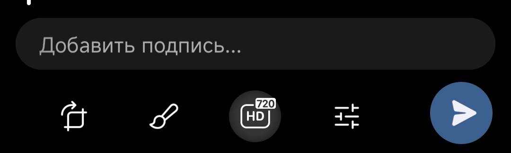
Пункт выбора качества в мобильном Telegram
Если вы хотите выложить историю в Telegram, то вам нужно экспортировать видео в
разрешении 1280 x 720 и указать перед экспортом битрейт до
5 Мбит/с. Если вы попробуете выложить в разрешении больше, чем
1280 x 720, то Telegram сожмёт ваше видео до 720p.
Если вы хотите установить себе анимированную аватарку в Telegram, то вам нужно
вывести видео в разрешении до 800 x 800 и с битрейтом до
2 Мбит/с.
Как выводить из After Effects видео в .mp4?
После выхода обновления After Effects 2023 вернулась
возможность нативно выводить в H.264, а это значит что
вы можете экспортировать видео в контейнер .mp4 сразу
из программы без использования Media Encoder.
Для этого откройте очередь рендера из выбранной композиции, которую вы хотите
отрендерить с помощью Ctrl + M. Затем выберите в
Output Module пресет с H.264 и нужным
битрейтом, укажите путь для рендера и нажмите на кнопку
Render. После успешного просчёта композиции вы получите
видео в .mp4, которое уже готово к публикации куда
угодно.
Выбор нужного пресета для рендера
Если вам не нравится стандартный кодек, или у вас старая версия
After Effects, вы можете воспользоваться сторонними
плагинами
AfterCodecs
или
Voukoder.
Если вы установили AfterCodecs, то вам нужно опять
зайти в Output Module из очереди рендера, нажать
Custom и выбрать его среди остальных форматов рендера.
Выбор AfterCodecs из списка остальных форматов
Для того чтобы зайти в настройки самого AfterCodecs,
нужно нажать на Format Options.
Настройки AfterCodecs
Video Codec: выбор кодека для вывода. Плагин
предлагает вывод в H.264 и
H.264 RGB для повседневной жизни,
H.264 для YouTube с более простыми настройками и
H.265 для более эффективного сжатия файла.
Tradeoff: выбор, на что ориентироваться при
кодировании - на степень качества, на желаемый битрейт или на желаемый размер
файла.
Quality: фактор качества видео или же
Constant Rate Factor. Чем больше значение - тем лучше.
Значение x = 99 или x = 100: почти неизменное
качество, но возможен большой вес выходного файла
Значение x > 70: отличное качество
Значение x > 40 и x < 70: хорошее качество
Значение x < 40: плохое качество
Bitrate: выбор фиксированного битрейта
File Size: автоматическая подстройка битрейта под
размер нужного файла. Иногда размер файла может выйти за пределы заданного
значения.
Speed: скорость кодирования видео. Чем ниже значение -
тем медленнее скорость, но лучше степень сжатия и качество видео
Значение x => 0 и
x <= 5: для финального рендера - медленная
скорость кодирования, но лучше качество
Значение x > 5 и
x <= 8: для черновых рендеров - быстрая
скорость кодирования, но хуже качество
Color: настройка битности цвета (8 или 10 бит),
ограничение яркостности цветов под ТВ (0-255 для Full или 16-235 для TV Range)
и выбор цветовой модели YUV
Параметры Tuning,
H.264 Profiles, GOP,
Audio Bitrate, VR Meta и
Fast Start лучше не трогать без острой необходимости!
Если вы установили Voukoder, то опять перейдите в
Output Module и выберите соответствующий пункт.
Прежде чем рендерить, убедитесь, что вы установили
коннектор для After Effects, без него в программе не появится пункт Voukoder.
Выбор Voukoder из списка остальных форматов
После выбора Voukoder в качестве рендера вы можете
зайти в Format Options, чтобы настроить параметры
вывода.
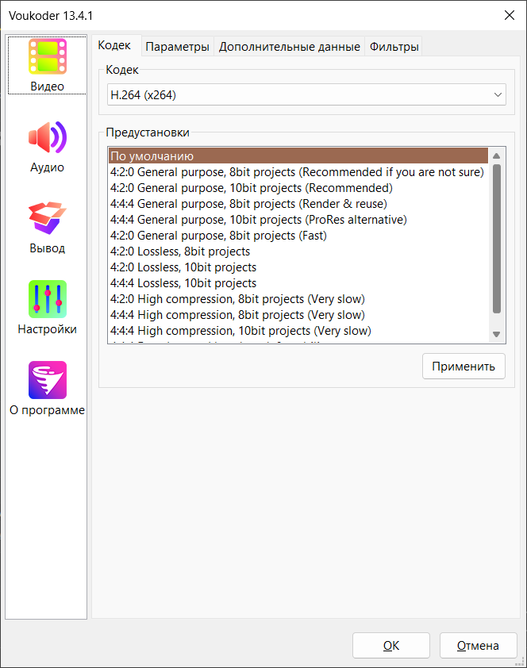
Настройки Voukoder
В Voukoder настройки схожи с теми, что в
AfterCodecs, но
Voukoder предлагает больше выбора видео и аудио
кодеков, а также поддерживает вывод в четырёх контейнерах:
.avi, .mkv,
.mp4 и .mov.
Как выводить .gif из After Effects?
Вывести из After Effects формат .gif можно разными
способами. Если вы собираетесь выводить видео для веб-страниц, советую лучше их
выводить в формат .webm, так как с помощью него можно
получить гораздо лучшую картинку с меньшим размером.
У формата .gif есть множество ограничений: формат не
поддерживает полупрозрачность, может вместить в себя максимум 256 цветов и
является довольно большим по весу, если указать большое разрешение или FPS.
Из After Effects .gif можно вывести с помощью
стороннего плагина
GifGun
с указанием желаемого веса файла. Для этого установите плагин и откройте его в
After Effects с помощью
Window > Extensions.
Открытие расширения GifGun
После открытия GifGun у вас появится простое окно с надписью
Make Gif и шестерёнками для настройки. В них вы можете
указать размер, FPS или путь к выходному файлу.
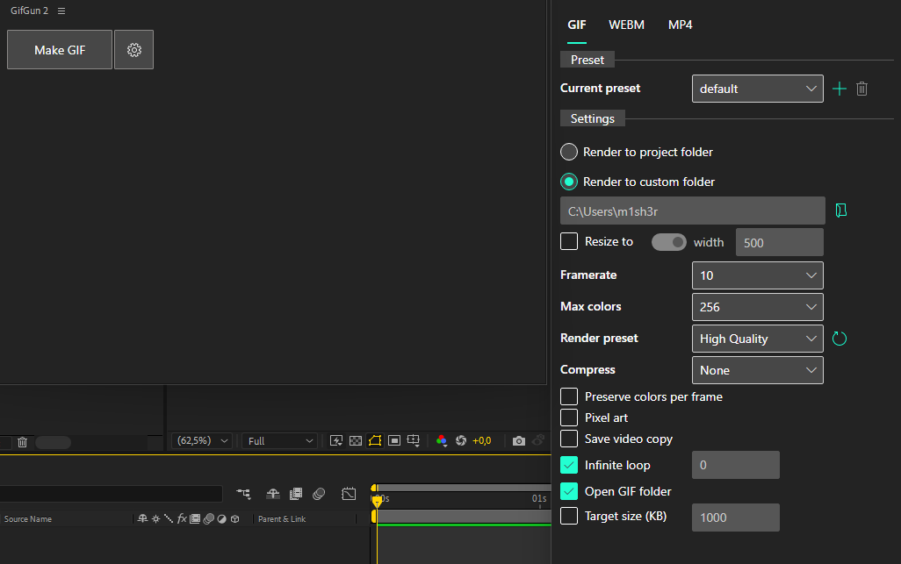
Настройки вывода в GifGun
Гифку можно ещё получить с помощью
Media Encoder. Хоть мы и отговариваем от его
использования, но в выборе различных форматов для вывода он занимает более
выигрышную позицию, нежели рендер из-под After Effects.
Для этого отправьте вашу композицию в очередь
Media Encoder и ждите, когда откроется вторая
программа.
Отправка композиции в очередь Media Encoder
Композиция из After Effects отправится в Media Encdoer,
если у вас установлен одинаковый год и на стандартном
расположении программ. В противном случае - вам выбьет ошибку о том, что
Media Encoder не найден.
После открытия Media Encoder выберите в таблице то, что
нам нужно, а именно GIF.
Выбор формата GIF в Media Encoder
Если вы хотите изменить какие-либо настройки для вывода - нажмите на название
стандартного пресета для открытия Export Settings. Там
же вы можете настроить разрешение, FPS или путь для вывода файла.
Настройки экспорта в Media Encoder
После настройки нажмите на зелёный треугольник для начала рендера.
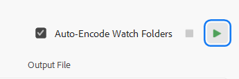
Кнопка для начала рендера в Media Encoder
Но мой фаворит в плане вывода .gif - это конвертация
уже готового видео в этот формат. Если у вас уже отрендерено видео, то перейдите
на сайт
Ezgif
и загрузите туда своё видео.
Загрузка видео на сервис Ezgif
Затем выберите нужное разрешение и FPS. Обычно настройки можно оставить как
есть, если вам не нужно заморачиваться с этим. Потом нажмите на
Convert to GIF, чтобы получить нужный вам файл.
Настройки конвертации в Ezgif
После того как сервис сконвертировал ваше видео, вам нужно будет его сохранить с
помощью правой кнопки мыши куда вам удобно.
Сохранение изображения в Firefox
Чем больше разрешение и FPS, тем больше будет весить ваш
.gif файл. Старайтесь уместить всё до 5-10 Мб.
Как отрендерить композицию с отображением всех границ и путей движения?
Для этого существует сторонний плагин
Cyclops. Он позволяет вывести вашу композицию вместе с границами объектов в формате
видео.
Почему из каждого угла советуют не использовать Media Encoder для рендера
композиций из After Effects?
Если вы собираетесь вывести из After Effects небольшую
композицию, то гораздо быстрее и легче вам будет просчитать внутри программы, не
прибегая к внешнему модулю рендера.
Media Encoder при просчёте сложных сцен может сам
останавливать рендер, не объяснив причину. Также при рендере через
Media Encoder вы можете наткнуться на потерю
исходников, различные артефакты и кривой просчёт плагинов с потерей лицензии.
Да, бывают случаи, что появляются водяные знаки якобы от отсутствия лицензии от
плагинов.
Ещё при рендере из Media Encoder - вы не получите
стабильную работу функции Multi-Frame Render, которая
отлично работает при рендере из самого After Effects.
Возможно, в более поздних версиях Media Encoder это
исправили, но лично у меня нет желания этот факт проверять.
Поэтому мы с каждого угла рекомендуем не ориентироваться на старые обучающие
видео по экспорту и не использовать Media Encoder для
вывода композиций из After Effects. Данная программа
была предназначена для совершенно другой цели: конвертация исходников из одного
формата и кодека в другой и создание прокси для
Premiere Pro.
Если вам нужно поставить на очередь просчёта несколько композиций из
After Effects, то вы можете создать пустой
проект-болванку, импортировать все нужные проекты через
Ctrl + I и кинуть их в очередь рендера внутри самой
программы через Ctrl + M. Таким образом вы получите
более стабильный рендер и нормальную поддержку
Multi-Frame Render.
Почему при выводе в .mp4 через встроенный кодек H.264 сохраняется файл с памятью
1 Кб?
Это баг, связанный с первыми ревизиями программ Adobe 2023 года, который не
позволял сохранять видео в путь с кириллицей.
Обновите After Effects до 23.6 или выше, данный баг уже был исправлен в
поздних версиях.
Почему после рендера всё смещается влево или вправо?
Это один из старых багов программ версий 23.1, 23.2,
23.3, 23.4 и 23.5 при использовании
Media Encoder в качестве рендера. Просто обновите
After Effects,Media Encoder и
Premiere Pro до 23.6 или выше.
Почему я не могу экспортировать видео в H.264 с нечётным разрешением?
Наверняка при использовании AfterCodecs или другого
типа вывода рендера вы натыкались на ошибку про разрешение? Это происходит из-за
технических особенностей кодеков H.264 и
H.265, а в частности использования им макроблоков с
чётными значениями.
Ошибка нечётного разрешения сторон композиции
Для решения проблемы просто укажите чётное значение разрешения у вашей
композиции и проблема будет решена.
Как сохранить свои пресеты для рендера файлов?
Чтобы создать свой пресет, откройте очередь рендера, а затем нажмите на
стрелочку около Output Module,
раскрывающий уже существующие пресеты. Затем нажмите на
Make Template, чтобы создать новый.
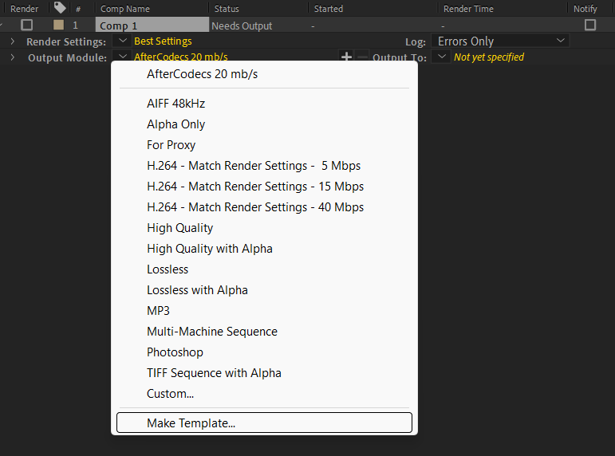
Создание шаблона рендера
В открывшемся окне у вас уже будет создан новый
пресет под названием
Untitled. Также в этом окне вы можете установить
пресеты для определённых типов файлов по умолчанию.
Для того чтобы отредактировать новый шаблон, нажмите на
Edit.
Окно Output Module Settings
Окно редактирования буквально ничем не отличается от обычной настройки типа
вывода. После создания пресета проверьте его на работоспособность.
Пресеты можно создавать и для
Render Settings аналогичным образом.
Как вывести из After Effects файлы с альфа-каналом?
Есть некоторые пользователи которые хотят вывести
.mp4 с альфа-каналом, и я их
разочарую: это не получится сделать, если не использовать
HEVC H.265 на macOS.
Прежде чем выводить видео с альфа-каналом, убедитесь в
том, что он у вас имеется в проекте. Для этого существует кнопка
Toggle Transparency Grid, которая подставляет сетку в
виде шашечной доски для отображения прозрачных частей в вашем проекте.
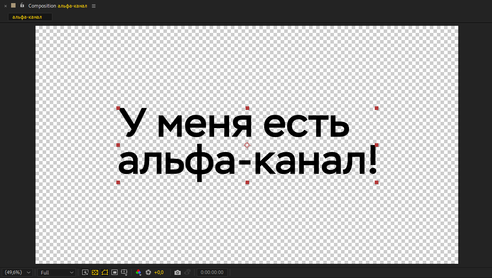
Отображение альфа-канала
Если всё в порядке, то время переходить в Render Queue с помощью комбинации
клавиш Ctrl + M. Откройте
Output Module и установите в
Format пункт QuickTime. Затем
перейдите в раздел Format Options и выберите там
Apple ProRes 4444 или
GoPro Cineform в разделе Video Codec. Затем установите
параметр RGB + Alpha в пункте
Channels. После выполнения всех шагов, вы можете
приступить к экспорту видео с альфа-каналом.
Корректные настройки для вывода видео с альфа-каналом
После рендера вы можете использовать ваше видео в последующем монтаже видео.
Если вы хотите просмотреть такое видео, но у вас оно не открывается, то вы
должны установить сторонний видео плеер, например
VLC
или
MPC-HC.
Учтите, что не все видео проигрыватели корректно выводят контент с
альфа-каналом.
Как отрендерить видео, если After Effects сбоит на конкретном участке?
Текст, приведённый ниже является частичным дубликатом текста из пункта
Часто появляется окно “Out of Memory”, ... из раздела
Частые ошибки
Если у вас есть проблемы с рендером именно конкретного участка видео, а в
предпросмотре всё проигрывается отлично, то вы можете создать прокси для
композиции и использовать его в финальном рендере. Для этого перейдите в окно
Project, выберите нужную композицию и перейдите в
Create Proxy > Movie
Создание прокси для композиции
После нажатия вас отправят в очередь рендера. Откройте пункт
Render Settings и выберите
Best Settings или перейдите в раздел
Custom и поставьте все наивысшие настройки, чтобы после
создания прокси ничего не пропало и не ухудшилось.
После успешного создания прокси-файла вы можете
продолжить работу. Внесённые изменения в композиции нужно будет опять
перерендерить, если это необходимо. Если вам не нравится эта функция, то вы
можете отключить прокси у композиции, нажав
Set Proxy > None.
Отключение прокси у композиции
При финальном рендере, чтобы уменьшить время просчёта на сложных кадрах, укажите
использование уже созданных прокси-файлов для
композиций в окне Render Settings.
Использование прокси-файлов для рендераПочему после рендера нет звука в видео?
Бывают такие случаи, когда пользователь рендерит композицию со звуком, но в файл
звук не пакуется. Это редкий баг, связанный с кривой автоматикой вывода звука.
Для этого перейдите в настройки Output Module и укажите
Audio Output On вместо Auto.
Данная опция принудительно сделает звуковую дорожку в видео, даже если в
композиции изначально нет звука. Также это поможет от бесячего превращения видео
в GIF в Telegram.
Принудительное включение аудио для вывода
Если это не помогло, то выведите звук из вашей композиции в
.wav и вставьте её в композицию, а затем повторите
попытку рендера ещё раз.
Почему при выводе видео получается видео, которое занимает очень много места на
диске?
По умолчанию в настройках вывода в старых версиях
After Effects, где ещё не вернули кодек
H.264, стоит контейнер AVI с
параметром без сжатия. После рендера многие новички не понимают, в чём же
прикол, когда натыкаются на очень большой файл и "неверное" расширение у видео.
Поэтому рекомендуется использовать другие варианты для экспорта, например
Quicktime, H.264 или другие
кодеки, занимающие меньше места на жёстком диске.
Если вы хотите сохранить настройки для рендера, которые вы задали, чтобы они
применялись по умолчанию для новых проектов, то существует функция
Output Module Templates, о которой мы писали выше.